Generated by scripts/90_report.py. Every number here is reproducible with run_all.ps1. Read CONCLUSIONS.md and RISK_MEMO.md first.
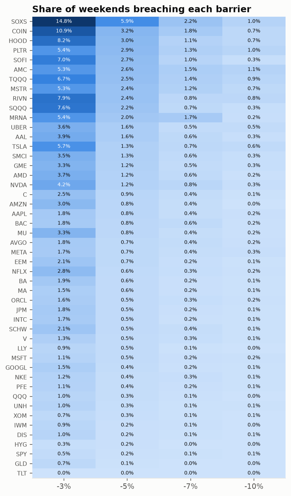
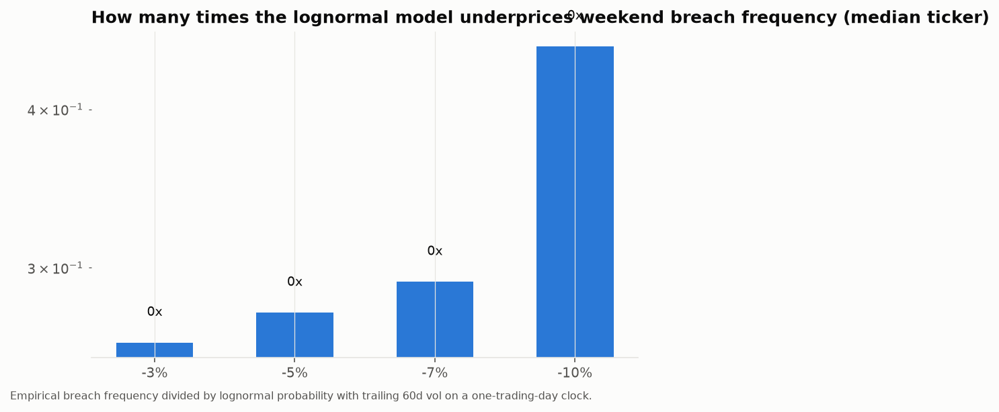
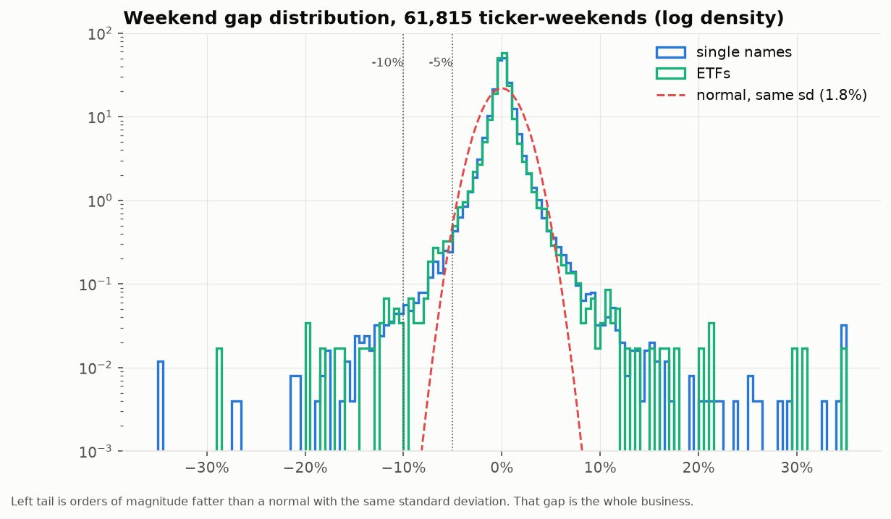
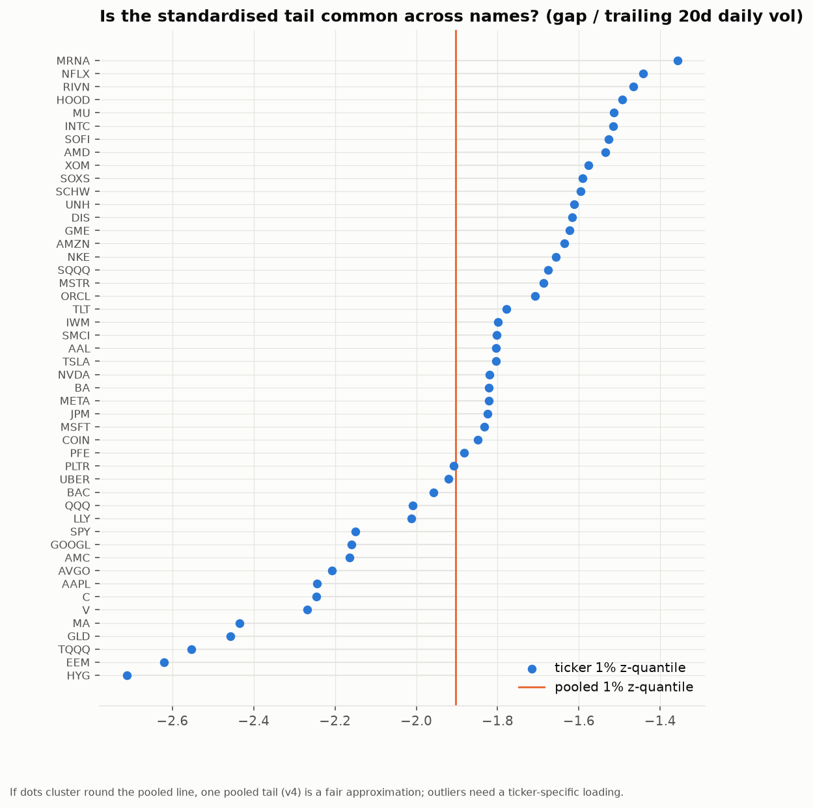
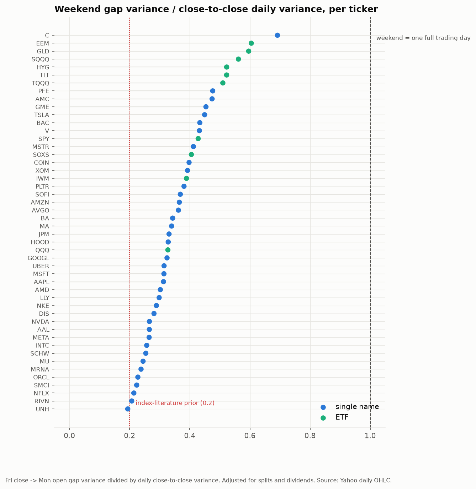
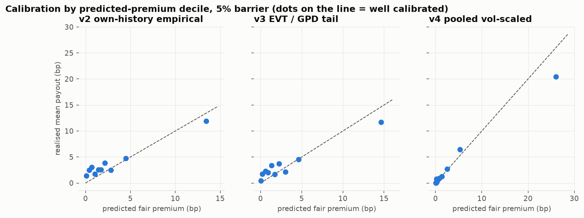
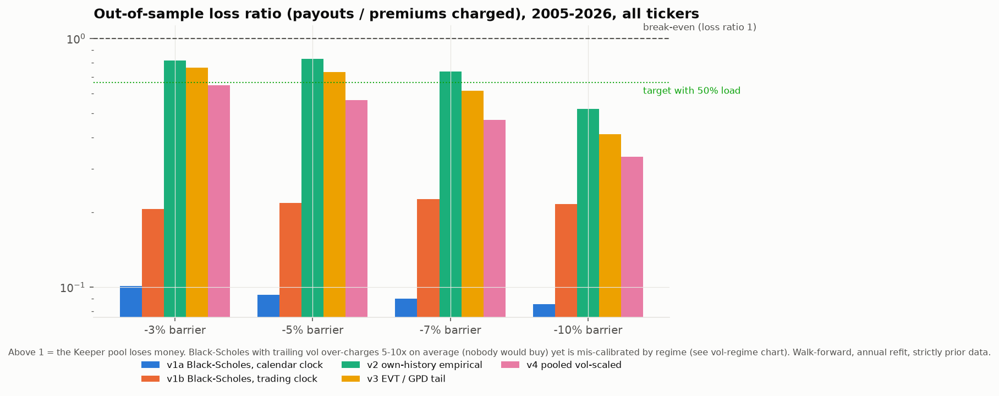
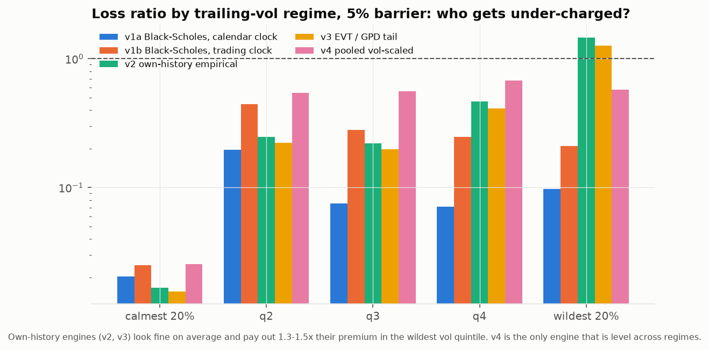
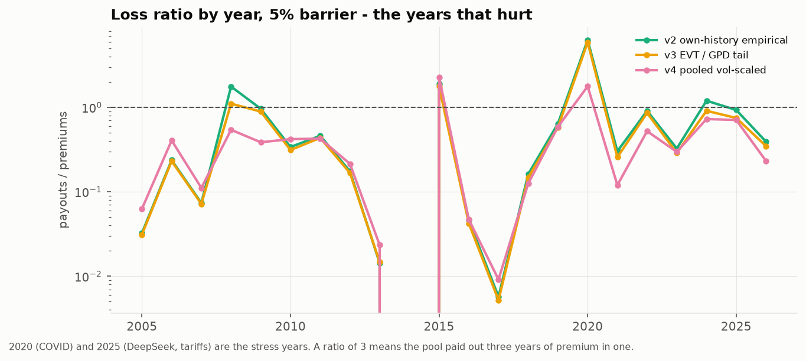
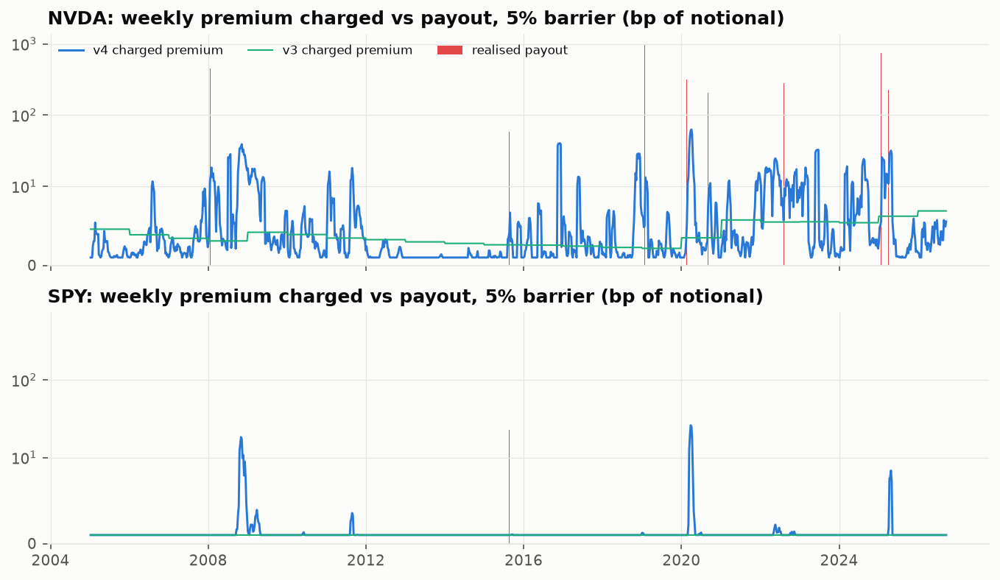
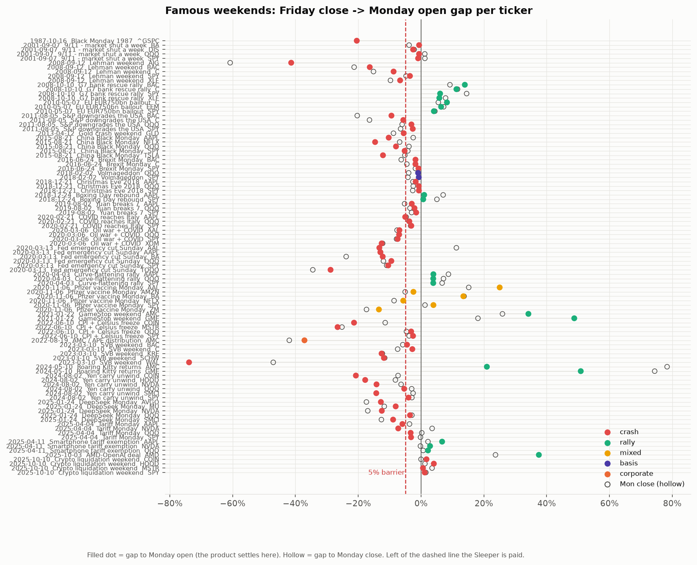
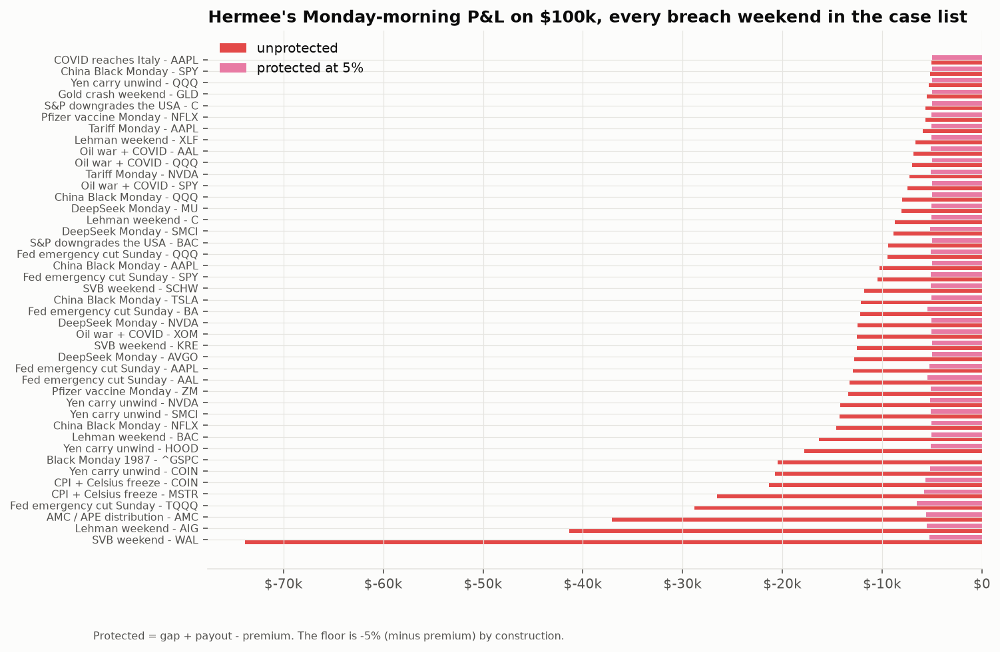
Hermee = the Sleeper (holds the stock, buys weekend cover). Kip = the Keeper (LP in the pool, sells the cover).
All premiums are what v4 would have quoted on that Friday, using only history before it. Gaps are Friday close to Monday open, split/dividend adjusted.
Dow -22.6% on the Monday. Index open data pre-1982 is unreliable, so this row uses close-to-close and is an anchor, not a backtest point.
| ticker | gap (open) | gap (close) | premium | Hermee unprotected | Hermee protected | loss avoided | Kip net |
|---|---|---|---|---|---|---|---|
| ^GSPC | -20.5% | -20.5% | nanbp | $-20,467 | $nan | $nan | $nan |
Exchanges closed 11-14 Sep. Holders were locked in for 10 days. SPY reopened -4.9%.
| ticker | gap (open) | gap (close) | premium | Hermee unprotected | Hermee protected | loss avoided | Kip net |
|---|---|---|---|---|---|---|---|
| SPY | -0.9% | +1.2% | 1.0bp | $-938 | $-948 | $-10 | $10 |
| QQQ | -0.6% | +1.2% | 2.5bp | $-623 | $-648 | $-25 | $25 |
| BA | -0.6% | -3.8% | 1.6bp | $-620 | $-636 | $-16 | $16 |
| DIS | -2.5% | -2.2% | 1.0bp | $-2,530 | $-2,540 | $-10 | $10 |
Lehman filed Sunday night, Merrill sold to BofA, AIG on the brink. The archetypal weekend where the world changed while the market was shut.
| ticker | gap (open) | gap (close) | premium | Hermee unprotected | Hermee protected | loss avoided | Kip net |
|---|---|---|---|---|---|---|---|
| SPY | -3.5% | -4.8% | 1.0bp | $-3,537 | $-3,547 | $-10 | $10 |
| BAC | -16.3% | -21.3% | 9.0bp | $-16,331 | $-5,090 | $11,240 | $-11,240 |
| C | -8.7% | -15.1% | 6.7bp | $-8,742 | $-5,067 | $3,674 | $-3,674 |
| AIG | -41.4% | -60.8% | 50.5bp | $-41,351 | $-5,505 | $35,846 | $-35,846 |
| XLF | -6.7% | -9.7% | 4.2bp | $-6,667 | $-5,042 | $1,624 | $-1,624 |
After the worst week since 1933, governments guaranteed bank debt over the weekend. Monday 13 Oct was the biggest S&P point gain ever.
| ticker | gap (open) | gap (close) | premium | Hermee unprotected | Hermee protected | loss avoided | Kip net |
|---|---|---|---|---|---|---|---|
| SPY | +6.1% | +14.5% | 5.7bp | $6,068 | $6,011 | $-57 | $57 |
| C | +11.3% | +11.6% | 94.2bp | $11,269 | $10,326 | $-942 | $942 |
| BAC | +13.9% | +9.2% | 108.8bp | $13,943 | $12,856 | $-1,088 | $1,088 |
| XLF | +5.8% | +7.8% | 40.6bp | $5,828 | $5,421 | $-406 | $406 |
Flash crash Thursday, then the EU/IMF package agreed Sunday night. Monday gapped up hard.
| ticker | gap (open) | gap (close) | premium | Hermee unprotected | Hermee protected | loss avoided | Kip net |
|---|---|---|---|---|---|---|---|
| SPY | +4.1% | +4.4% | 1.0bp | $4,089 | $4,079 | $-10 | $10 |
| EEM | +6.4% | +7.2% | 1.0bp | $6,389 | $6,379 | $-10 | $10 |
| C | +8.3% | +5.5% | 6.1bp | $8,250 | $8,189 | $-61 | $61 |
S&P cut the US to AA+ after Friday close. Monday: S&P 500 -6.7%, BAC -20%.
| ticker | gap (open) | gap (close) | premium | Hermee unprotected | Hermee protected | loss avoided | Kip net |
|---|---|---|---|---|---|---|---|
| SPY | -2.6% | -6.5% | 1.0bp | $-2,640 | $-2,650 | $-10 | $10 |
| BAC | -9.4% | -20.3% | 3.1bp | $-9,425 | $-5,031 | $4,394 | $-4,394 |
| C | -5.7% | -16.4% | 2.4bp | $-5,652 | $-5,024 | $628 | $-628 |
| QQQ | -3.1% | -6.0% | 1.0bp | $-3,065 | $-3,075 | $-10 | $10 |
Gold fell 9% on Monday 15 April 2013, its worst day in 30 years. The gold weekend gap that GLD holders never saw coming.
| ticker | gap (open) | gap (close) | premium | Hermee unprotected | Hermee protected | loss avoided | Kip net |
|---|---|---|---|---|---|---|---|
| GLD | -5.5% | -8.8% | 1.0bp | $-5,523 | $-5,010 | $513 | $-513 |
Shanghai -8.5% overnight, Dow futures limit-down, AAPL opened -10%. The single breach that drove backtest v1.
| ticker | gap (open) | gap (close) | premium | Hermee unprotected | Hermee protected | loss avoided | Kip net |
|---|---|---|---|---|---|---|---|
| AAPL | -10.3% | -2.5% | 1.5bp | $-10,297 | $-5,015 | $5,282 | $-5,282 |
| SPY | -5.2% | -4.2% | 1.0bp | $-5,227 | $-5,010 | $217 | $-217 |
| QQQ | -8.0% | -3.8% | 1.0bp | $-7,978 | $-5,010 | $2,968 | $-2,968 |
| NFLX | -14.6% | -6.8% | 5.7bp | $-14,631 | $-5,057 | $9,574 | $-9,574 |
| TSLA | -12.1% | -5.2% | 4.9bp | $-12,125 | $-5,049 | $7,075 | $-7,075 |
Vote result hit on Friday; Monday continued the slide. Banks gapped down again.
| ticker | gap (open) | gap (close) | premium | Hermee unprotected | Hermee protected | loss avoided | Kip net |
|---|---|---|---|---|---|---|---|
| SPY | -0.8% | -1.8% | 1.0bp | $-812 | $-822 | $-10 | $10 |
| BAC | -1.8% | -6.3% | 2.1bp | $-1,769 | $-1,790 | $-21 | $21 |
| C | -1.8% | -4.5% | 3.1bp | $-1,787 | $-1,818 | $-31 | $31 |
SPY opened only -0.5% but closed -4.1%; XIV died after the close. Cover settled at the OPEN would not have paid - the settlement-basis lesson.
| ticker | gap (open) | gap (close) | premium | Hermee unprotected | Hermee protected | loss avoided | Kip net |
|---|---|---|---|---|---|---|---|
| SPY | -0.7% | -4.2% | 1.0bp | $-726 | $-736 | $-10 | $10 |
| QQQ | -0.9% | -3.9% | 1.0bp | $-936 | $-946 | $-10 | $10 |
Mnuchin called the bank CEOs on Sunday; Monday 24 Dec was the worst Christmas Eve ever.
| ticker | gap (open) | gap (close) | premium | Hermee unprotected | Hermee protected | loss avoided | Kip net |
|---|---|---|---|---|---|---|---|
| SPY | -0.7% | -2.6% | 1.0bp | $-690 | $-700 | $-10 | $10 |
| AAPL | -1.7% | -2.6% | 2.2bp | $-1,712 | $-1,733 | $-22 | $22 |
| QQQ | -0.7% | -2.5% | 1.4bp | $-726 | $-740 | $-14 | $14 |
Holiday closed session. Dow +1,086 points on 26 Dec, the largest point gain in history at the time.
| ticker | gap (open) | gap (close) | premium | Hermee unprotected | Hermee protected | loss avoided | Kip net |
|---|---|---|---|---|---|---|---|
| SPY | +0.7% | +5.1% | 1.0bp | $696 | $686 | $-10 | $10 |
| AAPL | +1.0% | +7.0% | 2.2bp | $1,001 | $980 | $-22 | $22 |
China let the yuan through 7 on the Monday morning; S&P -3%.
| ticker | gap (open) | gap (close) | premium | Hermee unprotected | Hermee protected | loss avoided | Kip net |
|---|---|---|---|---|---|---|---|
| SPY | -1.5% | -3.0% | 1.0bp | $-1,548 | $-1,558 | $-10 | $10 |
| AAPL | -3.0% | -5.2% | 1.0bp | $-2,956 | $-2,966 | $-10 | $10 |
| QQQ | -2.1% | -3.5% | 1.0bp | $-2,092 | $-2,102 | $-10 | $10 |
Lombardy locked down over the weekend. First COVID gap-down.
| ticker | gap (open) | gap (close) | premium | Hermee unprotected | Hermee protected | loss avoided | Kip net |
|---|---|---|---|---|---|---|---|
| SPY | -3.1% | -3.3% | 1.0bp | $-3,101 | $-3,111 | $-10 | $10 |
| AAPL | -5.0% | -4.8% | 1.6bp | $-5,044 | $-5,016 | $28 | $-28 |
| QQQ | -3.7% | -3.9% | 1.0bp | $-3,730 | $-3,740 | $-10 | $10 |
Saudi-Russia price war launched Sunday; oil -30%. Circuit breaker at the open.
| ticker | gap (open) | gap (close) | premium | Hermee unprotected | Hermee protected | loss avoided | Kip net |
|---|---|---|---|---|---|---|---|
| SPY | -7.4% | -7.8% | 2.4bp | $-7,450 | $-5,024 | $2,426 | $-2,426 |
| XOM | -12.5% | -12.2% | 4.9bp | $-12,539 | $-5,049 | $7,490 | $-7,490 |
| AAL | -6.9% | -7.6% | 15.8bp | $-6,888 | $-5,158 | $1,730 | $-1,730 |
| QQQ | -7.0% | -6.9% | 3.2bp | $-6,990 | $-5,032 | $1,958 | $-1,958 |
Fed cut to zero on Sunday evening; futures limit-down instantly. Worst weekend gap in the dataset for most tickers.
| ticker | gap (open) | gap (close) | premium | Hermee unprotected | Hermee protected | loss avoided | Kip net |
|---|---|---|---|---|---|---|---|
| SPY | -10.4% | -10.9% | 14.5bp | $-10,449 | $-5,145 | $5,303 | $-5,303 |
| QQQ | -9.5% | -12.0% | 14.6bp | $-9,457 | $-5,146 | $4,311 | $-4,311 |
| AAPL | -13.0% | -12.9% | 26.0bp | $-12,958 | $-5,260 | $7,699 | $-7,699 |
| BA | -12.2% | -23.8% | 44.0bp | $-12,209 | $-5,440 | $6,769 | $-6,769 |
| AAL | -13.3% | +11.3% | 45.0bp | $-13,277 | $-5,450 | $7,827 | $-7,827 |
| TQQQ | -28.8% | -34.5% | 151.4bp | $-28,818 | $-6,514 | $22,304 | $-22,304 |
Weekend headlines on slowing case growth. Monday +7% for the S&P.
| ticker | gap (open) | gap (close) | premium | Hermee unprotected | Hermee protected | loss avoided | Kip net |
|---|---|---|---|---|---|---|---|
| SPY | +3.9% | +6.7% | 29.6bp | $3,888 | $3,592 | $-296 | $296 |
| QQQ | +3.9% | +7.1% | 28.5bp | $3,877 | $3,592 | $-285 | $285 |
| AAPL | +3.9% | +8.7% | 37.5bp | $3,931 | $3,556 | $-375 | $375 |
Vaccine efficacy announced Monday pre-open. Airlines +, stay-at-home names crushed: ZM -17%.
| ticker | gap (open) | gap (close) | premium | Hermee unprotected | Hermee protected | loss avoided | Kip net |
|---|---|---|---|---|---|---|---|
| SPY | +3.9% | +1.3% | 1.0bp | $3,944 | $3,934 | $-10 | $10 |
| BA | +13.5% | +13.7% | 3.6bp | $13,478 | $13,442 | $-36 | $36 |
| AAL | +25.0% | +15.2% | 6.1bp | $25,044 | $24,983 | $-61 | $61 |
| ZM | -13.4% | -17.4% | 12.1bp | $-13,419 | $-5,121 | $8,298 | $-8,298 |
| AMZN | -2.4% | -5.1% | 4.5bp | $-2,426 | $-2,472 | $-45 | $45 |
| NFLX | -5.7% | -8.6% | 4.1bp | $-5,671 | $-5,041 | $630 | $-630 |
r/wallstreetbets. GME opened +49% Monday. The weekend gap that went right - for longs.
| ticker | gap (open) | gap (close) | premium | Hermee unprotected | Hermee protected | loss avoided | Kip net |
|---|---|---|---|---|---|---|---|
| GME | +48.8% | +18.1% | 277.4bp | $48,792 | $46,019 | $-2,774 | $2,774 |
| AMC | +34.2% | +25.9% | 74.2bp | $34,188 | $33,446 | $-742 | $742 |
Hot CPI Friday, Celsius halted withdrawals Sunday night, BTC -15% over the weekend. COIN opened -14%.
| ticker | gap (open) | gap (close) | premium | Hermee unprotected | Hermee protected | loss avoided | Kip net |
|---|---|---|---|---|---|---|---|
| COIN | -21.3% | -11.4% | 69.6bp | $-21,342 | $-5,696 | $15,646 | $-15,646 |
| MSTR | -26.6% | -25.2% | 77.7bp | $-26,578 | $-5,777 | $20,801 | $-20,801 |
| SPY | -2.6% | -3.8% | 1.4bp | $-2,553 | $-2,566 | $-14 | $14 |
| QQQ | -3.1% | -4.6% | 3.1bp | $-3,147 | $-3,178 | $-31 | $31 |
AMC issued APE preferred units to holders on Monday. The share price 'gapped' -37% but holders received APE. Corporate-action basis risk.
| ticker | gap (open) | gap (close) | premium | Hermee unprotected | Hermee protected | loss avoided | Kip net |
|---|---|---|---|---|---|---|---|
| AMC | -37.1% | -42.0% | 58.0bp | $-37,125 | $-5,580 | $31,546 | $-31,546 |
SVB seized Friday, Signature Sunday, BTFP announced Sunday night. Regional banks gapped -10 to -60% on Monday. (SIVB/FRC delisted; proxies shown.)
| ticker | gap (open) | gap (close) | premium | Hermee unprotected | Hermee protected | loss avoided | Kip net |
|---|---|---|---|---|---|---|---|
| KRE | -12.6% | -12.3% | 2.4bp | $-12,567 | $-5,024 | $7,543 | $-7,543 |
| SCHW | -11.8% | -11.6% | 11.7bp | $-11,823 | $-5,117 | $6,706 | $-6,706 |
| WAL | -73.9% | -47.1% | 26.7bp | $-73,875 | $-5,267 | $68,608 | $-68,608 |
| BAC | -4.5% | -5.8% | 1.0bp | $-4,460 | $-4,470 | $-10 | $10 |
| C | -2.8% | -7.4% | 1.0bp | $-2,772 | $-2,782 | $-10 | $10 |
One tweet on Sunday night. GME +51% at the open.
| ticker | gap (open) | gap (close) | premium | Hermee unprotected | Hermee protected | loss avoided | Kip net |
|---|---|---|---|---|---|---|---|
| GME | +50.9% | +74.4% | 69.5bp | $50,859 | $50,164 | $-695 | $695 |
| AMC | +21.0% | +78.4% | 29.9bp | $20,962 | $20,663 | $-299 | $299 |
Nikkei -12% Monday morning; VIX 65 pre-market. NVDA opened -8%, COIN -10%.
| ticker | gap (open) | gap (close) | premium | Hermee unprotected | Hermee protected | loss avoided | Kip net |
|---|---|---|---|---|---|---|---|
| NVDA | -14.2% | -6.4% | 18.7bp | $-14,179 | $-5,187 | $8,992 | $-8,992 |
| SPY | -4.0% | -2.9% | 1.0bp | $-3,989 | $-3,999 | $-10 | $10 |
| QQQ | -5.4% | -3.0% | 1.0bp | $-5,357 | $-5,010 | $347 | $-347 |
| COIN | -20.8% | -7.3% | 20.4bp | $-20,754 | $-5,204 | $15,550 | $-15,550 |
| HOOD | -17.8% | -8.2% | 11.5bp | $-17,785 | $-5,115 | $12,670 | $-12,670 |
| SMCI | -14.3% | -2.5% | 10.7bp | $-14,258 | $-5,107 | $9,151 | $-9,151 |
DeepSeek R1 went viral over the weekend. NVDA opened -12.5%, closed -17%: the largest single-day market-cap loss in history.
| ticker | gap (open) | gap (close) | premium | Hermee unprotected | Hermee protected | loss avoided | Kip net |
|---|---|---|---|---|---|---|---|
| NVDA | -12.5% | -17.0% | 5.5bp | $-12,495 | $-5,055 | $7,440 | $-7,440 |
| AVGO | -12.8% | -17.4% | 1.3bp | $-12,791 | $-5,013 | $7,778 | $-7,778 |
| SMCI | -8.9% | -12.6% | 18.9bp | $-8,897 | $-5,189 | $3,708 | $-3,708 |
| MU | -8.1% | -11.7% | 9.8bp | $-8,072 | $-5,098 | $2,975 | $-2,975 |
| QQQ | -3.5% | -2.9% | 1.0bp | $-3,518 | $-3,528 | $-10 | $10 |
Liberation Day tariffs Thu/Fri, China retaliated, Monday futures limit-down overnight then a wild reversal.
| ticker | gap (open) | gap (close) | premium | Hermee unprotected | Hermee protected | loss avoided | Kip net |
|---|---|---|---|---|---|---|---|
| SPY | -3.2% | -0.2% | 1.9bp | $-3,184 | $-3,203 | $-19 | $19 |
| AAPL | -5.9% | -3.7% | 6.7bp | $-5,935 | $-5,067 | $868 | $-868 |
| NVDA | -7.3% | +3.5% | 11.1bp | $-7,263 | $-5,111 | $2,152 | $-2,152 |
| QQQ | -3.3% | +0.2% | 3.0bp | $-3,315 | $-3,345 | $-30 | $30 |
Exemption for phones and chips announced Friday night. AAPL gapped up on Monday.
| ticker | gap (open) | gap (close) | premium | Hermee unprotected | Hermee protected | loss avoided | Kip net |
|---|---|---|---|---|---|---|---|
| AAPL | +6.7% | +2.2% | 21.8bp | $6,707 | $6,489 | $-218 | $218 |
| NVDA | +2.9% | -0.2% | 29.1bp | $2,867 | $2,576 | $-291 | $291 |
| QQQ | +2.2% | +0.7% | 10.4bp | $2,214 | $2,110 | $-104 | $104 |
6GW deal announced Monday pre-open. AMD opened +37%.
| ticker | gap (open) | gap (close) | premium | Hermee unprotected | Hermee protected | loss avoided | Kip net |
|---|---|---|---|---|---|---|---|
| AMD | +37.5% | +23.7% | 1.0bp | $37,517 | $37,507 | $-10 | $10 |
Tariff tweet Friday afternoon, USD19bn liquidated, tokenized stocks on-chain traded at deep discounts all weekend while the NYSE was shut.
| ticker | gap (open) | gap (close) | premium | Hermee unprotected | Hermee protected | loss avoided | Kip net |
|---|---|---|---|---|---|---|---|
| COIN | +1.7% | -0.0% | 12.1bp | $1,734 | $1,613 | $-121 | $121 |
| MSTR | +0.6% | +3.5% | 12.7bp | $617 | $490 | $-127 | $127 |
| HOOD | +4.1% | +1.2% | 13.7bp | $4,073 | $3,936 | $-137 | $137 |
| SPY | +1.2% | +1.5% | 1.0bp | $1,168 | $1,158 | $-10 | $10 |
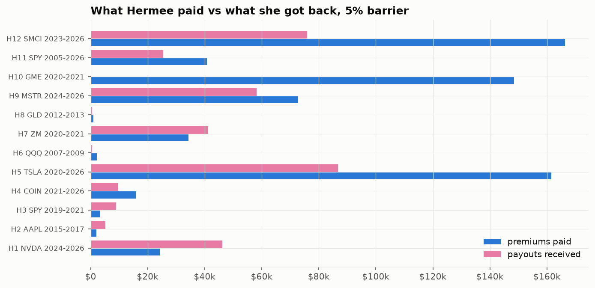
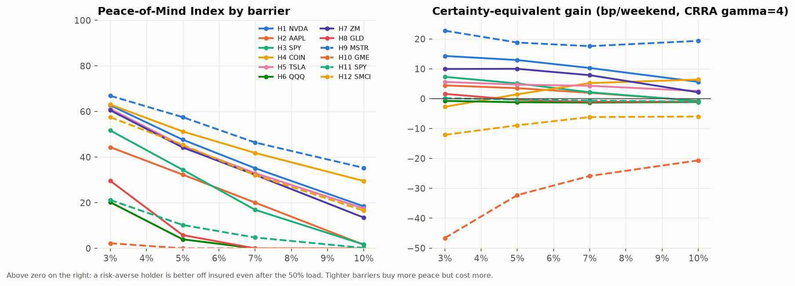
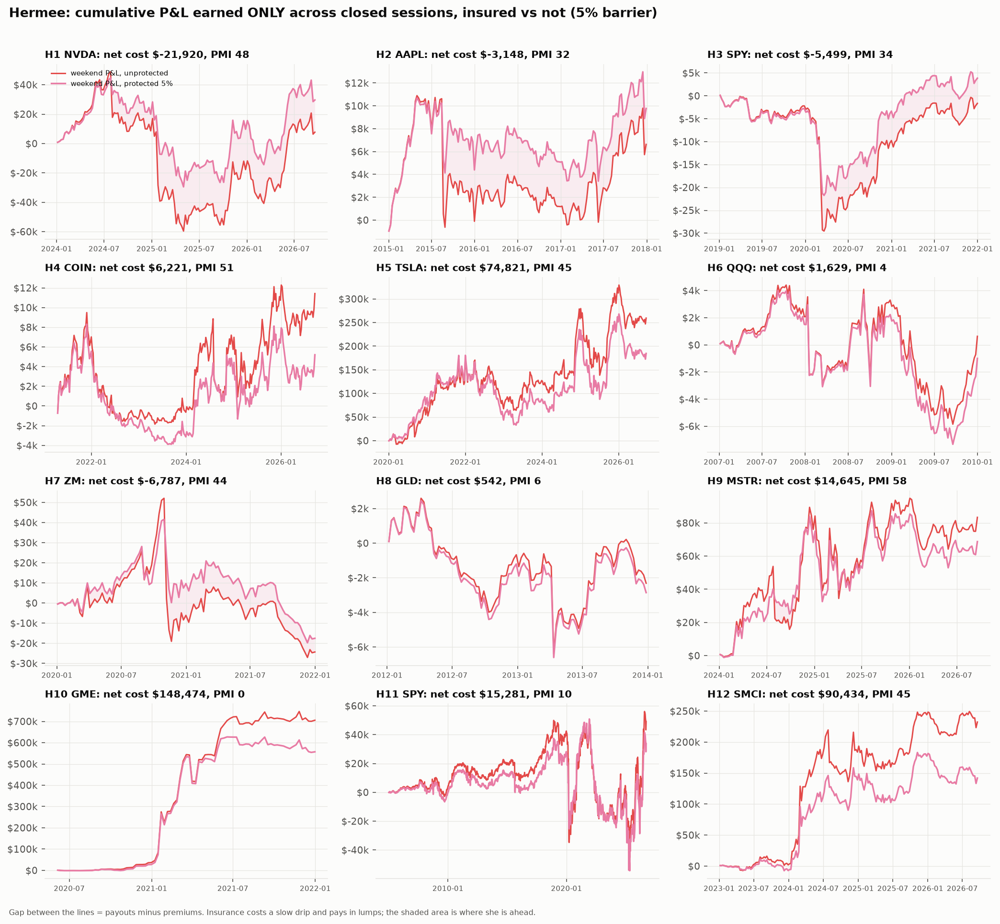
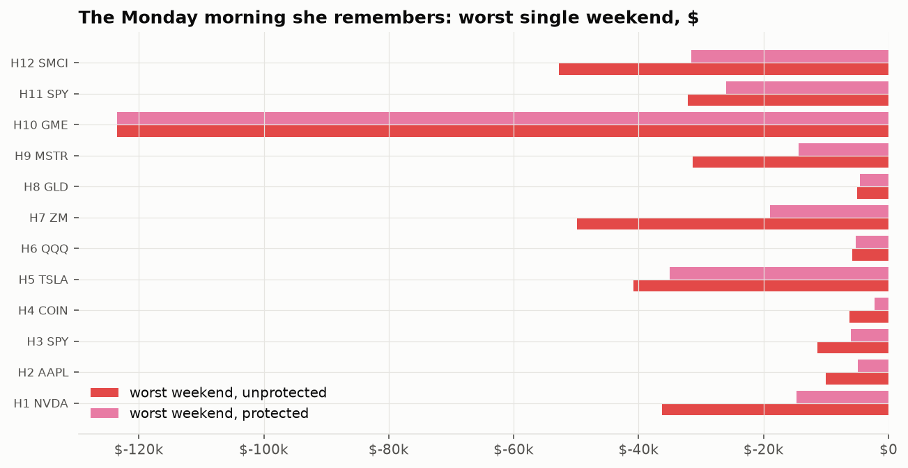
Hermee holds a fixed number of shares bought on the start date and buys cover on every weekend-spanning closed session. Premium = v4 pooled vol-scaled quote (walk-forward, 50% load, 1bp floor). Settlement at Monday open reference price.
Certainty equivalent uses CRRA utility with gamma = 4. 'Worth it' means a holder that risk-averse prefers the insured weekend return stream even after paying the premium.
Peace-of-Mind Index (0-100) = average reduction of 95% and 99% weekend CVaR. 100 means the tail is gone; 0 means nothing changed.
| barrier | premium bp | paid | received | net cost | net %/yr | worst wknd unprot | worst wknd prot | CE gain bp | PMI |
|---|---|---|---|---|---|---|---|---|---|
| 3% | 13.4 | $51,582 | $71,034 | $-19,452 | -2.37% | $-36,306 | $-13,873 | +14.31 | 63 |
| 5% | 6.4 | $24,265 | $46,184 | $-21,920 | -2.67% | $-36,306 | $-14,689 | +12.95 | 48 |
| 7% | 3.7 | $13,767 | $32,159 | $-18,393 | -2.24% | $-36,306 | $-20,424 | +10.29 | 35 |
| 10% | 2.1 | $7,843 | $16,381 | $-8,538 | -1.04% | $-36,306 | $-29,094 | +5.64 | 18 |
| barrier | premium bp | paid | received | net cost | net %/yr | worst wknd unprot | worst wknd prot | CE gain bp | PMI |
|---|---|---|---|---|---|---|---|---|---|
| 3% | 1.7 | $2,982 | $7,148 | $-4,166 | -1.18% | $-10,087 | $-4,085 | +4.46 | 44 |
| 5% | 1.1 | $2,041 | $5,189 | $-3,148 | -0.89% | $-10,087 | $-4,913 | +3.53 | 32 |
| 7% | 1.0 | $1,899 | $3,230 | $-1,331 | -0.38% | $-10,087 | $-6,867 | +1.99 | 20 |
| 10% | 1.0 | $1,849 | $291 | $1,558 | 0.44% | $-10,087 | $-9,806 | -0.71 | 2 |
| barrier | premium bp | paid | received | net cost | net %/yr | worst wknd unprot | worst wknd prot | CE gain bp | PMI |
|---|---|---|---|---|---|---|---|---|---|
| 3% | 2.6 | $4,851 | $13,578 | $-8,727 | -2.07% | $-11,361 | $-4,052 | +7.32 | 52 |
| 5% | 1.7 | $3,367 | $8,866 | $-5,499 | -1.30% | $-11,361 | $-6,030 | +5.11 | 34 |
| 7% | 1.4 | $2,850 | $4,290 | $-1,440 | -0.34% | $-11,361 | $-8,419 | +2.16 | 17 |
| 10% | 1.2 | $2,529 | $488 | $2,041 | 0.48% | $-11,361 | $-10,915 | -0.75 | 2 |
| barrier | premium bp | paid | received | net cost | net %/yr | worst wknd unprot | worst wknd prot | CE gain bp | PMI |
|---|---|---|---|---|---|---|---|---|---|
| 3% | 44.2 | $28,855 | $19,235 | $9,620 | 6.62% | $-6,203 | $-1,414 | -2.70 | 63 |
| 5% | 24.9 | $15,826 | $9,604 | $6,221 | 4.28% | $-6,203 | $-2,186 | +1.48 | 51 |
| 7% | 15.7 | $9,823 | $6,673 | $3,151 | 2.17% | $-6,203 | $-2,715 | +5.23 | 42 |
| 10% | 8.9 | $5,468 | $4,188 | $1,280 | 0.88% | $-6,203 | $-3,009 | +6.42 | 30 |
| barrier | premium bp | paid | received | net cost | net %/yr | worst wknd unprot | worst wknd prot | CE gain bp | PMI |
|---|---|---|---|---|---|---|---|---|---|
| 3% | 24.2 | $319,449 | $220,177 | $99,272 | 3.45% | $-40,800 | $-22,640 | +5.62 | 61 |
| 5% | 12.5 | $161,496 | $86,674 | $74,821 | 2.60% | $-40,800 | $-35,054 | +4.72 | 45 |
| 7% | 7.5 | $94,714 | $45,165 | $49,549 | 1.72% | $-40,800 | $-41,122 | +4.33 | 33 |
| 10% | 4.0 | $50,404 | $20,077 | $30,327 | 1.06% | $-40,800 | $-40,949 | +2.57 | 17 |
| barrier | premium bp | paid | received | net cost | net %/yr | worst wknd unprot | worst wknd prot | CE gain bp | PMI |
|---|---|---|---|---|---|---|---|---|---|
| 3% | 2.7 | $3,520 | $2,714 | $806 | 0.28% | $-5,764 | $-3,130 | -0.73 | 20 |
| 5% | 1.6 | $2,206 | $577 | $1,629 | 0.57% | $-5,764 | $-5,197 | -1.18 | 4 |
| 7% | 1.3 | $1,824 | $0 | $1,824 | 0.63% | $-5,764 | $-5,774 | -1.28 | 0 |
| 10% | 1.1 | $1,645 | $0 | $1,645 | 0.57% | $-5,764 | $-5,774 | -1.12 | 0 |
| barrier | premium bp | paid | received | net cost | net %/yr | worst wknd unprot | worst wknd prot | CE gain bp | PMI |
|---|---|---|---|---|---|---|---|---|---|
| 3% | 27.0 | $62,909 | $64,651 | $-1,741 | -0.41% | $-49,874 | $-12,159 | +9.96 | 61 |
| 5% | 14.5 | $34,358 | $41,145 | $-6,787 | -1.58% | $-49,874 | $-18,944 | +10.01 | 44 |
| 7% | 9.0 | $21,330 | $28,995 | $-7,666 | -1.79% | $-49,874 | $-26,224 | +7.88 | 32 |
| 10% | 5.1 | $12,255 | $14,008 | $-1,753 | -0.41% | $-49,874 | $-37,277 | +2.14 | 13 |
| barrier | premium bp | paid | received | net cost | net %/yr | worst wknd unprot | worst wknd prot | CE gain bp | PMI |
|---|---|---|---|---|---|---|---|---|---|
| 3% | 1.3 | $1,228 | $2,310 | $-1,082 | -0.58% | $-5,057 | $-2,756 | +1.62 | 30 |
| 5% | 1.0 | $1,021 | $479 | $542 | 0.29% | $-5,057 | $-4,588 | -0.41 | 6 |
| 7% | 1.0 | $989 | $0 | $989 | 0.53% | $-5,057 | $-5,066 | -1.00 | 0 |
| 10% | 1.0 | $987 | $0 | $987 | 0.53% | $-5,057 | $-5,066 | -1.00 | 0 |
| barrier | premium bp | paid | received | net cost | net %/yr | worst wknd unprot | worst wknd prot | CE gain bp | PMI |
|---|---|---|---|---|---|---|---|---|---|
| 3% | 52.8 | $125,335 | $108,518 | $16,817 | 3.63% | $-31,402 | $-11,542 | +22.76 | 67 |
| 5% | 30.4 | $72,770 | $58,125 | $14,645 | 3.16% | $-31,402 | $-14,447 | +18.80 | 58 |
| 7% | 19.5 | $46,769 | $34,679 | $12,090 | 2.61% | $-31,402 | $-19,027 | +17.60 | 46 |
| 10% | 11.3 | $27,207 | $23,185 | $4,022 | 0.87% | $-31,402 | $-23,713 | +19.36 | 35 |
| barrier | premium bp | paid | received | net cost | net %/yr | worst wknd unprot | worst wknd prot | CE gain bp | PMI |
|---|---|---|---|---|---|---|---|---|---|
| 3% | 60.5 | $246,570 | $11,869 | $234,701 | 22.53% | $-123,490 | $-123,490 | -46.61 | 2 |
| 5% | 37.6 | $148,474 | $0 | $148,474 | 14.25% | $-123,490 | $-123,490 | -32.26 | 0 |
| 7% | 30.5 | $131,788 | $0 | $131,788 | 12.65% | $-123,490 | $-123,490 | -25.86 | 0 |
| 10% | 24.8 | $126,630 | $7,880 | $118,750 | 11.40% | $-123,490 | $-135,010 | -20.64 | 0 |
| barrier | premium bp | paid | received | net cost | net %/yr | worst wknd unprot | worst wknd prot | CE gain bp | PMI |
|---|---|---|---|---|---|---|---|---|---|
| 3% | 1.7 | $53,216 | $52,058 | $1,159 | 0.02% | $-32,095 | $-19,606 | +0.17 | 21 |
| 5% | 1.3 | $40,796 | $25,515 | $15,281 | 0.23% | $-32,095 | $-26,052 | -0.28 | 10 |
| 7% | 1.1 | $37,387 | $12,119 | $25,269 | 0.39% | $-32,095 | $-26,052 | -0.63 | 5 |
| 10% | 1.1 | $35,541 | $1,378 | $34,163 | 0.52% | $-32,095 | $-30,836 | -0.99 | 0 |
| barrier | premium bp | paid | received | net cost | net %/yr | worst wknd unprot | worst wknd prot | CE gain bp | PMI |
|---|---|---|---|---|---|---|---|---|---|
| 3% | 54.7 | $264,683 | $137,939 | $126,744 | 14.58% | $-52,767 | $-32,054 | -12.09 | 58 |
| 5% | 33.8 | $166,267 | $75,833 | $90,434 | 10.40% | $-52,767 | $-31,574 | -8.90 | 45 |
| 7% | 22.0 | $108,819 | $48,800 | $60,019 | 6.90% | $-52,767 | $-29,225 | -6.15 | 32 |
| 10% | 13.0 | $64,544 | $23,430 | $41,114 | 4.73% | $-52,767 | $-37,121 | -5.96 | 17 |
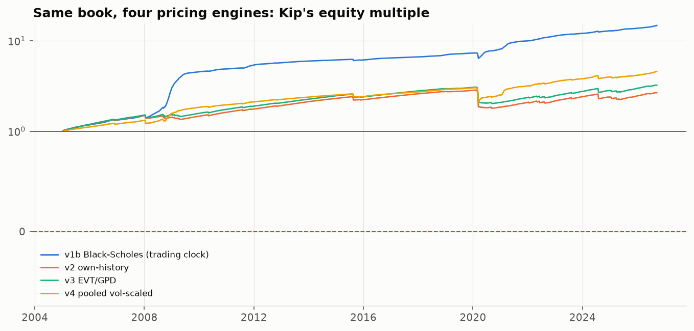
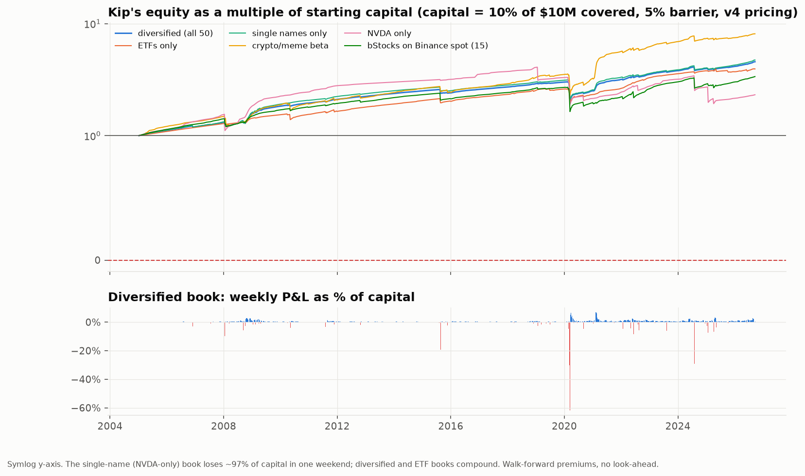
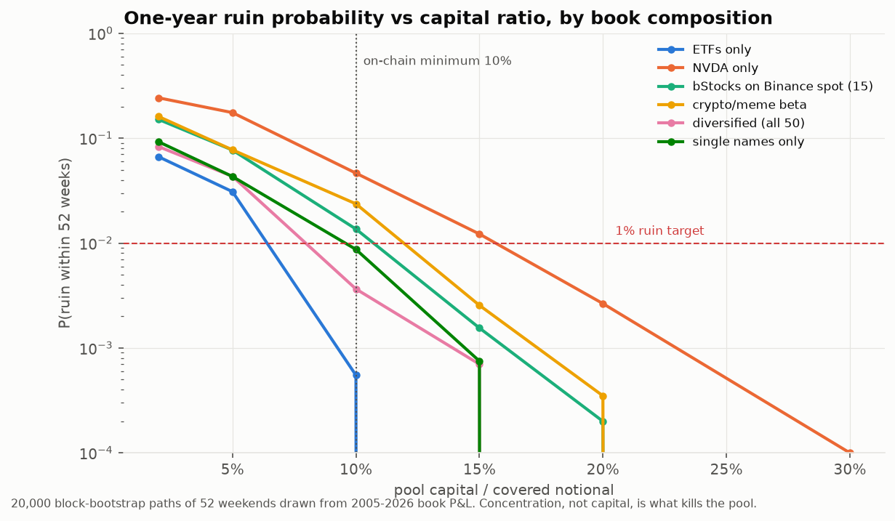
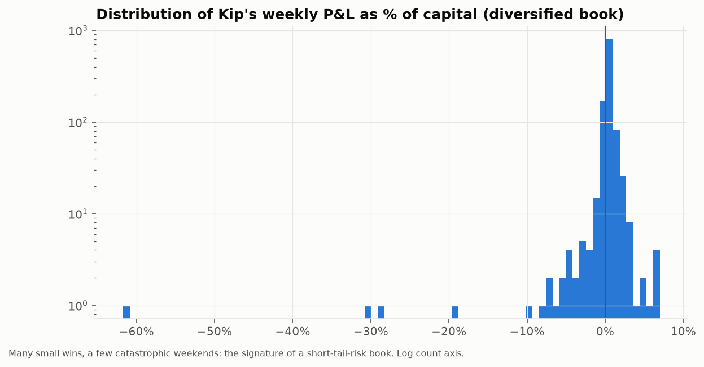
Kip deposits $1,000,000 (10% of a $10,000,000 diversified book) on 2015-01-02 and underwrites 5% weekend cover on every universe ticker, priced by v4 with a 50% load. Idle USDT earns 4%.
| Friday | book payout ($) | premium collected ($) | net ($) | % of capital | worst ticker | its payout |
|---|---|---|---|---|---|---|
| 2020-03-13 | 649,566 | 32,363 | -617,203 | -62% | TQQQ | 23.8% |
| 2020-03-06 | 313,027 | 10,503 | -302,524 | -30% | TQQQ | 14.9% |
| 2024-08-02 | 300,663 | 9,960 | -290,702 | -29% | MSTR | 22.4% |
| 2015-08-21 | 197,120 | 2,707 | -194,413 | -19% | TQQQ | 13.4% |
| 2022-06-10 | 100,253 | 17,591 | -82,662 | -8% | MSTR | 21.6% |
| 2025-01-24 | 80,441 | 6,525 | -73,916 | -7% | AVGO | 7.8% |
| 2025-04-04 | 84,823 | 16,288 | -68,535 | -7% | MSTR | 6.4% |
| 2023-08-11 | 66,025 | 6,465 | -59,560 | -6% | AMC | 31.7% |
| book | roc_annualised | sharpe_weekly_ann | max_drawdown_pct_of_peak | worst_weekend_pct_capital | loss_ratio | ruined_in_sample |
|---|---|---|---|---|---|---|
| diversified (all 50) | 0.073 | 0.902 | -0.316 | -0.617 | 0.566 | False |
| ETFs only | 0.065 | 0.955 | -0.263 | -0.393 | 0.615 | False |
| single names only | 0.074 | 0.849 | -0.331 | -0.685 | 0.554 | False |
| crypto/meme beta | 0.101 | 0.935 | -0.351 | -0.798 | 0.563 | False |
| NVDA only | 0.04 | 0.152 | -0.534 | -0.969 | 0.923 | False |
| bStocks on Binance spot (15) | 0.058 | 0.445 | -0.394 | -0.636 | 0.737 | False |
| capital_ratio | ETFs only | NVDA only | bStocks on Binance spot (15) | crypto/meme beta | diversified (all 50) | single names only |
|---|---|---|---|---|---|---|
| 0.02 | 0.0666 | 0.2426 | 0.1511 | 0.161 | 0.0832 | 0.0925 |
| 0.05 | 0.0309 | 0.1752 | 0.077 | 0.0773 | 0.0432 | 0.0431 |
| 0.1 | 0.0006 | 0.0464 | 0.0136 | 0.0236 | 0.0036 | 0.0087 |
| 0.15 | 0 | 0.0122 | 0.0016 | 0.0026 | 0.0007 | 0.0008 |
| 0.2 | 0 | 0.0026 | 0.0002 | 0.0004 | 0 | 0 |
| 0.3 | 0 | 0.0001 | 0 | 0 | 0 | 0 |
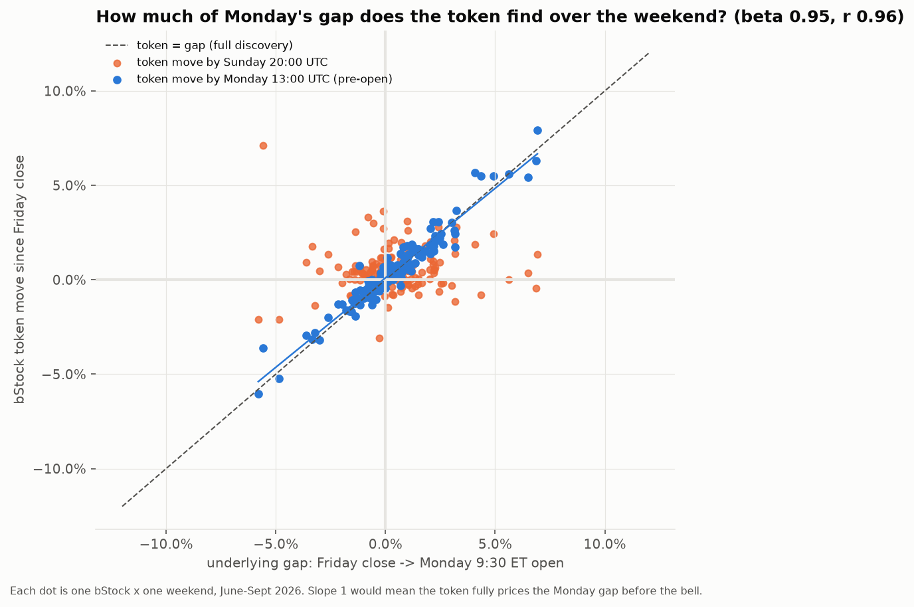
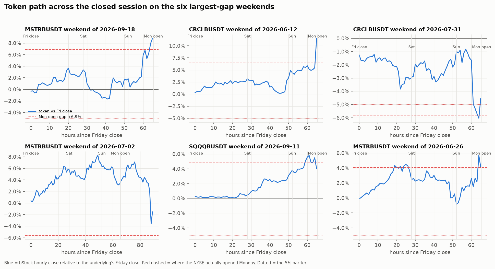
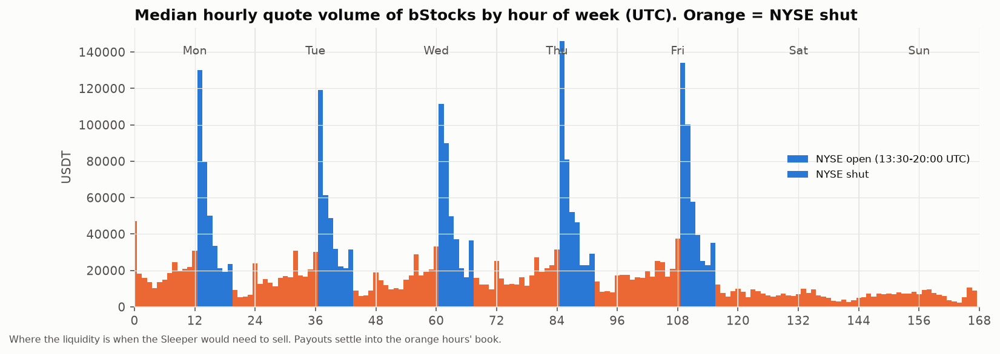
165 token-weekends across 15 bStocks, 2026-06-12 to 2026-09-18.
| symbol | token_price | shares_mult | reference_price | stock_price | token_premium_vs_stock | holders | market_status | reason |
|---|---|---|---|---|---|---|---|---|
| AAPLon | 341.354 | 1.0034 | 340.205 | 340.205 | 0 | 33664 | offhours | TRADING |
| AMZNon | 249.625 | 1 | 249.625 | 249.62 | 0 | 3040 | offhours | TRADING |
| COINon | 194.99 | 1 | 194.99 | 194.98 | 0.0001 | 1493 | offhours | TRADING |
| CRCLon | 87.785 | 1 | 87.785 | 87.745 | 0.0005 | 4682 | offhours | TRADING |
| GOOGLon | 344.25 | 1.0025 | 343.405 | 343.555 | -0.0004 | 26210 | offhours | TRADING |
| HOODon | 118.96 | 1 | 118.96 | 118.96 | 0 | 740 | closed | MARKET_CLOSED |
| METAon | 747.858 | 1.0028 | 745.75 | 745.71 | 0.0001 | 2256 | offhours | TRADING |
| MSFTon | 520.018 | 1.0057 | 517.055 | 517.085 | -0.0001 | 19474 | offhours | TRADING |
| MSTRon | 158.725 | 1 | 158.725 | 158.705 | 0.0001 | 1800 | offhours | TRADING |
| NVDAon | 224.95 | 1.0017 | 224.565 | 224.505 | 0.0003 | 57517 | offhours | TRADING |
| QQQon | 747.695 | 1.0041 | 744.655 | 744.655 | 0 | 22977 | offhours | TRADING |
| SPYon | 777.996 | 1.0095 | 770.695 | 770.695 | 0 | 24344 | offhours | TRADING |
| TSLAon | 372.015 | 1 | 372.015 | 372.005 | 0 | 29719 | offhours | TRADING |
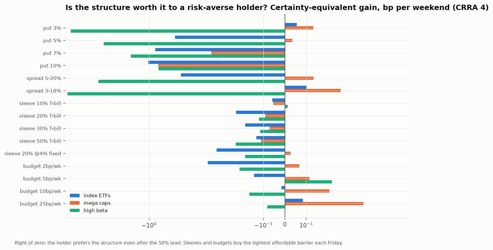
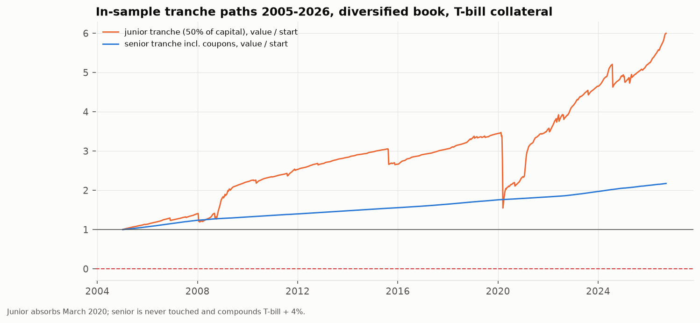
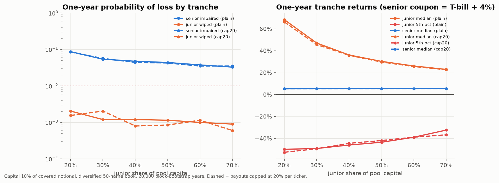
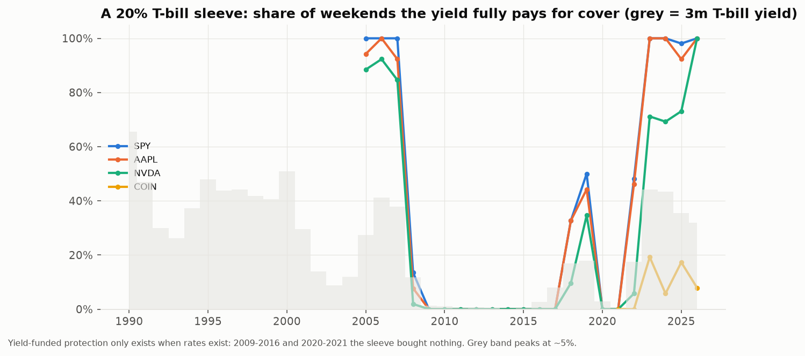
All Hermee numbers are per $1 of her stock holding, every ticker-weekend 2005-2026, v4 charged premiums (walk-forward), T-bill yield = actual 13-week bill yield that Friday unless stated. CE gain = certainty-equivalent weekly return gain vs the same portfolio without cover (CRRA gamma 4), in bp per week; positive means a risk-averse holder prefers the structure.
| structure | high beta | index ETFs | mega caps |
|---|---|---|---|
| bare | 0 | 0 | 0 |
| budget 10bp/wk | -0.17 | -0.02 | 0.21 |
| budget 25bp/wk | -0.08 | 0.08 | 0.37 |
| budget 2bp/wk | -0.21 | -0.36 | 0.07 |
| budget 5bp/wk | 0.22 | -0.14 | 0.12 |
| put 10% | -0.8 | -1.02 | -0.8 |
| put 3% | -6.51 | 0.06 | 0.13 |
| put 5% | -2.95 | -0.54 | 0.03 |
| put 7% | -1.55 | -0.86 | -0.34 |
| sleeve 10% T-bill | 0.01 | -0.06 | -0.06 |
| sleeve 20% @4% fixed | -0.19 | -0.32 | 0.03 |
| sleeve 20% T-bill | -0.12 | -0.23 | -0.09 |
| sleeve 30% T-bill | -0.12 | -0.19 | -0.07 |
| sleeve 50% T-bill | -0.23 | -0.13 | -0.11 |
| spread 3-18% | -7.02 | 0.1 | 0.26 |
| spread 5-20% | -3.35 | -0.49 | 0.13 |
Cost (% of holding per year), worst weekend and Peace-of-Mind Index by structure, all 50 names:
| structure | cost_pct_pa | worst | worst_ref | pmi | share_weeks_covered | avg_barrier_bought |
|---|---|---|---|---|---|---|
| bare | 0 | -0.371 | -0.371 | 0 | 0 | nan |
| put 3% | 5.34 | -0.177 | -0.371 | 37.004 | 1 | 0.03 |
| put 5% | 3.041 | -0.166 | -0.371 | 22.423 | 1 | 0.05 |
| put 7% | 2.07 | -0.155 | -0.371 | 11.995 | 1 | 0.07 |
| put 10% | 1.403 | -0.14 | -0.371 | 5.123 | 1 | 0.1 |
| spread 5-20% | 2.921 | -0.227 | -0.371 | 21.589 | 1 | 0.05 |
| spread 3-18% | 5.197 | -0.23 | -0.371 | 35.845 | 1 | 0.03 |
| sleeve 10% T-bill | 0.05 | -0.334 | -0.334 | 0.432 | 0.096 | 0.051 |
| sleeve 20% T-bill | 0.197 | -0.297 | -0.297 | 1.386 | 0.305 | 0.049 |
| sleeve 30% T-bill | 0.343 | -0.26 | -0.26 | 2.488 | 0.408 | 0.046 |
| sleeve 50% T-bill | 0.673 | -0.185 | -0.185 | 5.099 | 0.482 | 0.04 |
| sleeve 20% @4% fixed | 0.532 | -0.297 | -0.297 | 4.319 | 0.842 | 0.047 |
| budget 2bp/wk | 0.547 | -0.371 | -0.371 | 4.331 | 0.846 | 0.047 |
| budget 5bp/wk | 1.07 | -0.371 | -0.371 | 9.689 | 0.923 | 0.04 |
| budget 10bp/wk | 1.703 | -0.371 | -0.371 | 14.823 | 0.961 | 0.036 |
| budget 25bp/wk | 2.874 | -0.367 | -0.371 | 25.17 | 0.989 | 0.033 |
Sleeve affordability: share of weekends where a 20% T-bill sleeve fully funds at least the 10% barrier, by rate regime:
| year | AAPL | COIN | NVDA | QQQ | SPY | TSLA |
|---|---|---|---|---|---|---|
| 2005 | 0.94 | nan | 0.88 | 1 | 1 | nan |
| 2006 | 1 | nan | 0.92 | 1 | 1 | nan |
| 2007 | 0.92 | nan | 0.85 | 1 | 1 | nan |
| 2008 | 0.08 | nan | 0.02 | 0.13 | 0.13 | nan |
| 2009 | 0 | nan | 0 | 0 | 0 | nan |
| 2010 | 0 | nan | 0 | 0 | 0 | 0 |
| 2011 | 0 | nan | 0 | 0 | 0 | 0 |
| 2012 | 0 | nan | 0 | 0 | 0 | 0 |
| 2013 | 0 | nan | 0 | 0 | 0 | 0 |
| 2014 | 0 | nan | 0 | 0 | 0 | 0 |
| 2015 | 0 | nan | 0 | 0 | 0 | 0 |
| 2016 | 0 | nan | 0 | 0 | 0 | 0 |
| 2017 | 0 | nan | 0 | 0 | 0 | 0 |
| 2018 | 0.33 | nan | 0.1 | 0.33 | 0.33 | 0.1 |
| 2019 | 0.44 | nan | 0.35 | 0.5 | 0.5 | 0.23 |
| 2020 | 0 | nan | 0 | 0 | 0 | 0 |
| 2021 | 0 | 0 | 0 | 0 | 0 | 0 |
| 2022 | 0.46 | 0 | 0.06 | 0.48 | 0.48 | 0.12 |
| 2023 | 1 | 0.19 | 0.71 | 1 | 1 | 0.73 |
| 2024 | 1 | 0.06 | 0.69 | 1 | 1 | 0.5 |
| 2025 | 0.92 | 0.17 | 0.73 | 0.92 | 0.98 | 0.42 |
| 2026 | 1 | 0.08 | 1 | 1 | 1 | 0.82 |
| structure | roc_pa | sharpe | max_dd | worst_week_pct_cap | loss_ratio | ruin_1y | median_roc_1y | p05_roc_1y |
|---|---|---|---|---|---|---|---|---|
| K0 baseline: USDT idle @4% flat | 0.0726 | 0.9024 | -0.3162 | -0.6172 | 0.5657 | 0.0034 | 0.2001 | -0.2282 |
| K1 capital in T-bills (actual 3m yield) | 0.067 | 0.7787 | -0.367 | -0.6172 | 0.5667 | 0.0035 | 0.1769 | -0.2305 |
| K2 payout cap 20% per ticker | 0.0719 | 0.8996 | -0.3189 | -0.609 | 0.5667 | 0.0025 | 0.1984 | -0.1839 |
| K1+K2 T-bills + cap | 0.0663 | 0.7741 | -0.3711 | -0.609 | 0.5667 | 0.0029 | 0.1747 | -0.2037 |
| J | senior_impaired_1y | senior_loss_p99 | senior_median_return | junior_median_return | junior_p05_return | junior_wiped_1y | book | senior_spread |
|---|---|---|---|---|---|---|---|---|
| 0.2 | 0.0874 | -0.8885 | 0.0532 | 0.6833 | -0.4998 | 0.002 | plain | 0.04 |
| 0.2 | 0.085 | -0.8723 | 0.0532 | 0.6628 | -0.5264 | 0.0016 | cap20 | 0.04 |
| 0.3 | 0.0541 | -0.8684 | 0.0534 | 0.4701 | -0.4917 | 0.0012 | plain | 0.04 |
| 0.3 | 0.0568 | -0.8615 | 0.0534 | 0.4557 | -0.4947 | 0.002 | cap20 | 0.04 |
| 0.4 | 0.0476 | -0.8492 | 0.0535 | 0.361 | -0.4604 | 0.0012 | plain | 0.04 |
| 0.4 | 0.0442 | -0.8339 | 0.0535 | 0.3584 | -0.4447 | 0.0008 | cap20 | 0.04 |
| 0.5 | 0.044 | -0.8174 | 0.0535 | 0.3025 | -0.4351 | 0.0012 | plain | 0.04 |
| 0.5 | 0.0426 | -0.8006 | 0.0535 | 0.2969 | -0.4197 | 0.0008 | cap20 | 0.04 |
| 0.6 | 0.0377 | -0.7725 | 0.0535 | 0.2606 | -0.3892 | 0.001 | plain | 0.04 |
| 0.6 | 0.0352 | -0.7505 | 0.0536 | 0.2557 | -0.3888 | 0.0012 | cap20 | 0.04 |
| 0.7 | 0.0328 | -0.6979 | 0.0535 | 0.2291 | -0.3242 | 0.0009 | plain | 0.04 |
| 0.7 | 0.0352 | -0.6914 | 0.0536 | 0.2269 | -0.3673 | 0.0006 | cap20 | 0.04 |
| m | floor | roc_pa | min_equity_pct | avg_covered_$M | min_covered_$M | ruin_1y | p_below_floor_1y | median_ret_1y | p05_ret_1y |
|---|---|---|---|---|---|---|---|---|---|
| 10 | 0 | 0.1077 | 1.0021 | 25.1683 | 10 | 0 | 0 | 0.1927 | -0.286 |
| 10 | 0.5 | 0.0909 | 1.0013 | 17.4691 | 5 | 0 | 0 | 0.1063 | -0.1261 |
| 10 | 0.7 | 0.0822 | 1.0009 | 13.082 | 3 | 0 | 0 | 0.0704 | -0.0667 |
| 7 | 0.5 | 0.0777 | 1.001 | 10.3622 | 3.5 | 0 | 0 | 0.0784 | -0.0747 |
| 15 | 0.7 | 0.0948 | 1.0012 | 22.292 | 4.5 | 0 | 0 | 0.1001 | -0.1116 |
Run 26 Sep 2026. Universe: every Ondo / bStock ticker on BSC with usable price history (50 names, 28 with a bStock wrapper), daily OHLC 1990/2004 to 25 Sep 2026, split and dividend adjusted; bStock hourly spot klines from Binance (15 tokens, 11 Jun to 26 Sep 2026); Binance public RWA endpoints for the token universe. 61,815 ticker-weekends. Pricing evaluated walk-forward 2005-2026 (184k ticker-weekend-barrier rows). Everything reproducible with run_all.ps1; charts in charts/, tables in results/, browsable at report/index.html.
| pooled, all tickers | value |
|---|---|
| P(Monday opens more than 3% below Friday close) | 2.47% of weekends |
| P(gap < -5%) | 0.85% |
| P(gap < -7%) | 0.41% |
| P(gap < -10%) | 0.19% |
| expected payout of 5% cover | 2.85bp of notional per weekend (3.3bp over 2005-2026) |
| excess kurtosis of weekend gaps | 198 (single names 221, ETFs 63) |
| weekend variance / full trading-day variance | 0.19 to 0.69 by ticker (median 0.34); the 0.2 index prior holds only for the calmest names |
A 5% weekend put on a diversified name costs about 4-6bp charged (fair 3.7bp plus a 50% load). SPY holders pay the 1bp floor most weekends. COIN and MSTR holders pay 25-30bp. That is the price list, and it is cheap enough for a one-button Friday product on most names and too expensive to be a weekly habit on meme names, which is correct.
Out of sample, 5% barrier, 2005-2026, loss ratio = payouts / premiums charged (target 0.67 with a 50% load):
| engine | fair quote (bp) | loss ratio | Keeper Sharpe | loss ratio, calmest 20% | loss ratio, wildest 20% |
|---|---|---|---|---|---|
| v1a Black-Scholes, calendar clock | 23.2 | 0.10 | 5.0 | 0.02 | 0.10 |
| v1b Black-Scholes, trading clock | 9.8 | 0.22 | 2.7 | 0.03 | 0.21 |
| v2 own-history empirical | 2.5 | 0.83 | 0.20 | 0.02 | **1.46** |
| v3 EVT / GPD tail | 2.9 | 0.73 | 0.34 | 0.02 | **1.26** |
| **v4 pooled vol-scaled** | 3.7 | **0.57** | **0.68** | 0.03 | 0.58 |
Twelve holding scenarios, fixed share count, cover bought every weekend at v4's quote, settlement at Monday open, 5% barrier. She refuses any weekend quote above 2% of her holding (14 GameStop weekends in early 2021).
| scenario | paid | received | net cost per year | worst weekend, bare | worst weekend, covered | worth it to a risk-averse holder (CRRA 4) | Peace-of-Mind Index |
|---|---|---|---|---|---|---|---|
| H1 $100k NVDA 2024-26 | $24.3k | $46.2k | **-3.1%** (she is paid) | -$36.3k | -$14.7k | yes | 48 |
| H2 $100k AAPL 2015-17 | $2.0k | $5.2k | -1.0% | -$10.1k | -$4.9k | yes | 32 |
| H3 $100k SPY 2019-21 | $3.4k | $8.9k | -1.5% | -$11.4k | -$6.0k | yes | 34 |
| H4 $50k COIN 2021-26 | $15.8k | $9.6k | +3.9% | -$6.2k | -$2.2k | yes | 51 |
| H5 $50k TSLA 2020-26 | $161k | $87k | +3.3% | -$40.8k | -$35.1k | yes (barely) | 45 |
| H6 $100k QQQ 2007-09 | $2.2k | $0.6k | +0.8% | -$5.8k | -$5.2k | no | 4 |
| H7 $50k ZM 2020-21 | $34.4k | $41.1k | -1.7% | -$49.9k | -$18.9k | yes | 44 |
| H8 $100k GLD 2012-13 | $1.0k | $0.5k | +0.3% | -$5.1k | -$4.6k | no | 6 |
| H9 $50k MSTR 2024-26 | $72.8k | $58.1k | +2.8% | -$31.4k | -$14.4k | yes | 58 |
| H10 $25k GME 2020-21 | $148k | $0 | +14% | -$123k | -$123k (priced out that weekend) | no | 0 |
| H11 $100k SPY 2005-26 | $40.8k | $25.5k | +0.24% | -$32.1k | -$26.1k | no | 10 |
| H12 $50k SMCI 2023-26 | $166k | $76k | +10% | -$52.8k | -$31.6k | no | 45 |
Reading: on names whose tail is genuinely fat relative to their vol (NVDA, AAPL, SPY through COVID, ZM, MSTR, COIN) a gamma-4 holder is better off insured *after* the 50% load, and her worst Monday is cut by half to two thirds. On calm ETFs in calm periods (QQQ 2007-09 had exactly one breach, GLD one) it is a small tax for little relief. On extreme-vol names (SMCI, GME) v4 prices her out, which is the engine doing its job. The "peace of mind" number that matters is the worst-weekend column: -$36k becomes -$15k, -$50k becomes -$19k. The 5% floor is the product.
Diversified book, $10M covered across all 50 names equal-weight, capital 10% ($1M), v4 pricing, 4% idle yield:
| 2005-2026 | Jan 2015 - Sep 2026 | |
|---|---|---|
| return on capital, annualised | 7.3% | 10.0% (equity $1.0M to $3.07M) |
| weekly Sharpe, annualised | 0.90 | - |
| loss ratio | 0.57 | 0.65 |
| weekends losing money | 6% | 8% |
| worst weekend | 13 Mar 2020: -62% of capital | same |
| max drawdown from peak | -32% | -63% |
| in-sample ruin | never | never |
Bootstrap (20,000 block-resampled 52-week paths) one-year ruin probability at the 10% on-chain floor: diversified 0.4%, ETFs-only 0.1%, single names 0.9%, the 15 Binance-spot bStocks 1.4%, crypto/meme beta 2.4%, NVDA-only 4.6%. Capital ratio needed for <= 1%: 10% for diversified or ETF books, 15% for a bStock-only or crypto-beta book, 20% for a single name. Median one-year return on capital at 10%: +20% diversified, +35% crypto beta, +23% NVDA-only (with a 5th percentile of -80%).
Kip's honest pitch: a short-tail-risk book that earns 3-4x its payouts in most years and hands back a year or two of income in one weekend every five years. The Sharpe of 0.9 is real out of sample. The 10% floor is the minimum, not the target; concentration caps are not optional (section 5 of the risk memo).
Full cards in results/30_famous_weekends.md; every case priced with v4 fitted on data before the event.
reasonCode, and the contract must void or adjust on corporate actions.| v1 claim | v2 finding |
|---|---|
| Black-Scholes under-prices the 5% tail 15x | Over-prices 3-10x on average with trailing vol; under-prices only in calm regimes with a fixed low vol. Mis-calibrated, not uniformly cheap. |
| Fair premium at 5% ~5bp, ~7.6bp loaded | 3.7bp fair, ~5.5bp charged, over 50 names; 1bp for SPY, 25-30bp for COIN/MSTR |
| Keeper Sharpe +0.36, in-sample | +0.68 per notional out of sample; 0.90 weekly on the capitalised diversified book |
| Capital >= 10% gives 1.6% ruin | 0.4% for a diversified book; 1.4-2.4% for the books people will actually build (bStocks-only, crypto beta); 4.6% single name |
| The overnight-drift leg does not hold | Over 2004-2026 closed-session drift is strongly positive (SPY +9.6%/yr closed vs +0.7%/yr open). Still not a pricing input and not in the pitch; it is a research artefact. |
| Weekend variance = 0.75 of a day (AAPL) | 0.2-0.7 across names; the point stands: weekends are far riskier than calendar time implies for single names |
1. Earnings-calendar flag (refuse or widen cover in earnings weekends): the NVDA Jan 2019 and META/NFLX gaps cluster there.
2. Survivorship correction: today's tokenized list excludes SIVB, FRC, LEH, BBBY. The measured tail is a lower bound. Add a delisted-name sample.
3. Per-ticker concentration rule in the pool contract, parameterised from the ruin curves (single name <= 10% of covered notional; crypto-beta cluster <= 25%).
4. Ondo on-chain klines (the public kline endpoint returned two candles); repeat section 6 on Ondo to test the "mint window shut" drift hypothesis.
5. Live shadow-quoting on the 15 Binance bStocks every Friday and a record of realised loss ratio from now on.
Prepared as a diligence memo on the Keeper pool: a shared USDT vault that sells 5%-barrier weekend cover on tokenized US equities (bStocks, Ondo) on BSC, priced by the v4 pooled vol-scaled engine, settling at the Monday-open reference price. Numbers reference results/ and CONCLUSIONS.md.
The pool is short a portfolio of deep out-of-the-money weekend puts. Its P&L is many small positive weeks and rare large negative ones (weekly P&L histogram is one-sided). Correlation across names goes to one on exactly the weekends that matter: on 13 Mar 2020, 43 of 43 covered names were underwater and the equal-weight book paid 650bp of covered notional against 32bp of premium, 62% of a 10% capital buffer in one settlement. 6 Mar 2020 cost 30%, 2 Aug 2024 29%, 21 Aug 2015 19%. Four weekends in 22 years each cost more than 10% of capital; that is the base rate.
Mitigants: capital floor (10% minimum, enforced on-chain); v4's vol conditioning raised the book premium 3-15x going into 2008, 2020 and 2022 (the pool was collecting 13-32bp when the hits came, not 3bp); per-weekend payout cap per ticker (cover is "made whole to the barrier", a second barrier at -25% would have capped TQQQ/MSTR/AMC/WAL payouts).
Residual: a 1987-scale (-20%) index weekend would cost ~150% of a 10% buffer on any equity book. The pool must be allowed to fail gracefully (pro-rata payouts, no socialised debt).
Single-name books are uninsurable at 10% capital: NVDA-only has 4.6% one-year ruin and a -97%-of-capital weekend (Jan 2019). The 15 Binance-spot bStocks as a book need 15% capital for <= 1% ruin; a crypto-beta book (COIN, MSTR, HOOD, GME, AMC, PLTR, TSLA, levered ETFs) needs 15% and shows 19 weekends of >10% capital loss. The WAL case (SVB weekend, -73.9% at the open on a 27bp premium) shows what one regional bank does to a book.
Requirement: per-ticker cap (<= 10% of covered notional), cluster cap for crypto-beta and levered ETFs (<= 25% together), capital ratio that scales with book concentration (e.g. 10% x (1 + 5 x HHI)), and refusal of cover above a vol threshold (v4 quotes > 2% of notional are a natural cut-off; Hermee refuses them too).
Buyers choose when to buy. Anyone who knows an earnings date, an FDA date or a court date buys cover that weekend; v4 does not know the calendar. Evidence of clustering is anecdotal in this data (NVDA Jan 2019, META, NFLX) and a formal test needs an earnings-date history. The token itself does not leak weekend information (Sunday-night beta to the Monday gap is 0.02), so there is no on-chain signal a Sleeper can exploit on Saturday; the exposure is to Friday-afternoon buyers with private information and to Sunday-news buyers if the sale window stays open past Friday close.
Requirement: sales close at the Friday bell (batch auction as in the spec); earnings-week surcharge or refusal; utilisation-based repricing so a surge in demand on one name raises its quote.
Open-settled cover paid nothing on Volmageddon (SPY -0.7% at the open, -4.2% at the close) and on Christmas Eve 2018; close-settled cover would have. Conversely close settlement exposes the pool to a full Monday session of price discovery. The official Monday-open reference price is the cleaner oracle (single print, exchange-published). The choice must be explicit in the product name ("Monday-open cover") because the buyer's mental model is "Monday".
Corporate actions: AMC/APE (Aug 2022) and reverse splits produce "gaps" that are not losses. The contract must consume the RWA API statusInfo.reasonCode and void or adjust on corporate-action codes. Our own data feed contained one unadjusted reverse split (SOXS, May 2026) that would have been a 94% payout.
Never settle on the token print. The bStock trades within 0.31% of the Monday open (median) but 0.84% at the 90th percentile thirty minutes before the bell, and weekend volume is ~21% of the week's, so a weekend book is manipulable for far less than a pool payout. Settle on the exchange reference price at the bell via the RWA API; hold the payout until the reference is published.
Payouts are USDT from the vault; no market execution is needed to settle. Keeper hedging in the token in Monday pre-market is feasible at ~0.3% tracking error (section 6 of conclusions), which helps above the barrier and not below. Sleepers who want to exit on Sunday face a thin book that has not yet priced the news; the put is the better instrument, which is the product's point.
bStocks have free 1:1 conversion 24/7 and the spot token tracked the underlying to within tens of bp in the sample. Ondo's mint/redeem window and BSC-only liquidity mean the Ondo token can drift for 48 hours; the public kline endpoint did not return history so this is untested. Reference price, not token price, drives settlement, so peg drift is a user-experience issue rather than a solvency one, unless collateral is held in tokens (it should be USDT).
The universe is today's tokenized list, i.e. survivors. SIVB (-60% weekend), FRC, LEH, BBBY are not in it; proxies (WAL, KRE, SCHW, BAC, C) were used for the SVB case. Yahoo adjusted data has known corporate-action gaps. Both biases understate the tail. Treat every payout estimate as a floor; the 50% load and 10% capital floor are the buffer against it.
Weekend cover is economically a put. The track rules say spot only. Structuring options are in the spec (prepay of two spot legs; pure rotation vault). Not a backtest question, but it gates whether the Keeper pool can exist as designed.
| book | minimum capital / covered notional | expected return on capital (median, 1y) | 1-y ruin |
|---|---|---|---|
| diversified >= 30 names, single name <= 10% | 10% | +20% | 0.4% |
| ETFs only | 10% | +17% | 0.1% |
| bStocks on Binance spot (15 names) | 15% | +14% | 0.2% |
| crypto / meme beta cluster | 15% (and cluster cap) | +25% | 0.3% |
| any single name | 20% | +13% | 0.3% |
Recommendation: proceed with the diversified or ETF-anchored pool at a 10% floor, hard per-ticker and cluster caps, v4 pricing with a 50% load and a 1bp floor, refusal above a 2%-of-notional quote, sales closing at the Friday bell, Monday-open reference-price settlement, and a payout cap per ticker per weekend. Publish the realised loss ratio every Monday; the loss ratio is the product's credibility.
All versions quote a fair premium per $1 of covered notional for one closed session (Friday close to Monday open reference price) at barrier *b*. The product pays max(-b - gap, 0) per $1, i.e. the holder is made whole below the barrier line. The charged premium is max(fair * (1 + load), floor) with load = 50% and floor = 1bp (see config.json). Every version is evaluated walk-forward: the model used for weekends in year Y is fitted only on data dated before 1 January of Y (annual refit). Nothing in a quote uses information from after the Friday it is quoted on.
| version | file | formula | what it is for | verdict |
|---|---|---|---|---|
| v1a | `versions/v1_black_scholes.py` | Black-Scholes put, K = S(1-b), sigma = trailing 60d realised vol, **T = 65.5h / 8760h** (calendar clock) | the naive retail intuition | over-charges 10x on average; regime-blind |
| v1b | same | same put, **T = 1/252** (weekend = one trading day of variance) | the textbook trading-time convention | over-charges 4-5x on average, yet under-charges the calm-regime tail; the lognormal shape is wrong in both directions |
| v2 | `versions/v2_empirical.py` | `mean(max(-b - gap_i, 0))` over the ticker's **own** prior weekend gaps (>= 104 obs, else fall back to v4) | historical simulation | under-charges (loss ratio 0.83 with the load); 11% of quotes are zero because the ticker has no breach in its history yet |
| v3 | `versions/v3_evt_gpd.py` | peaks-over-threshold: losses above the 90th percentile u follow a Generalised Pareto (xi, beta), MLE. `E[(L-b)+] = p_u (1 + xi (b-u)/beta)^(-1/xi) (beta + xi (b-u)) / (1 - xi)` for b >= u; empirical body plus GPD tail for b < u. xi clamped to [-0.5, 0.9] | the EVT engine backtest-v1 asked for | better than v2 (loss ratio 0.73) but still under-charges: a per-ticker tail fitted on ~50 exceedances is noisy and slow to learn |
| **v4** | `versions/v4_pooled_volscaled.py` | standardise every gap by that Friday's trailing 20d daily vol, `z = gap / sigma_d`; pool z across **all** tickers and all prior weekends; quote `E[max(-b - sigma_d(t) z, 0)]` | production candidate: conditions on today's vol, borrows tail shape across names, never quotes zero | loss ratio 0.57 at 5% (target 0.67 for a 50% load); best Keeper Sharpe of the empirical engines; over-charges the wildest vol quintile and slightly under-charges the calmest |
Default settlement is the Monday open reference price (what the RWA API referencePrice snaps to at the bell). The panel also carries payout_close (settle at Monday close) for sensitivity: Volmageddon (2 Feb 2018) is the case where open-settled cover pays nothing and close-settled cover pays 4%.
1. Universe: 1 ticker -> 50 (every Ondo/bStock BSC ticker with usable history), 104 weekends -> 61,815 ticker-weekends, 1990/2004 -> 2026.
2. Out-of-sample: v1 fitted the premium on the same payouts it scored. v2 is walk-forward everywhere.
3. The "Black-Scholes under-prices the 5% tail 15x" claim was made with a fixed 29% vol in a calm regime. With trailing realised vol the picture is: lognormal over-charges on average and under-charges exactly when it matters (calm regimes before a shock). The correct statement is "mis-calibrated by regime", not "always too cheap". See results/21_loss_ratio_by_vol_regime.csv.
4. The drift leg: closed-session drift is positive for most names over 2004-2026 (SPY +9.6%/yr closed vs +0.7%/yr open) - the opposite of the v1 finding on AAPL 2015-17. It is still not a pricing input (t-stats 1.5-3, regime dependent) and is not in the pitch.
5. Data hygiene: gaps below -75% are treated as unadjusted corporate actions in the vendor feed (SOXS 2026-05-22). AMC/APE-type distributions are kept and flagged as corporate-action basis risk.
sigma = sqrt(w rv20^2 + (1-w) rv252^2), a GARCH-like shrink that would stop v4 over-charging in vol spikes. Worth building if the regime table shows the wildest quintile's loss ratio far below the others.Synthesis of four research passes (research/01 TradFi, 02 DeFi landscape, 03 hackathon and Binance stack, 04 structured products and UX) plus the backtest. Detailed evidence and every URL are in those files.
The risk is where the damage is. The three most-remembered equity losses of the last two years were Monday gaps: Nvidia -17% on DeepSeek Monday ($589bn, the largest one-day loss ever), the tariff weekend (S&P futures limit-down, VIX 60), the yen carry unwind (record intraday VIX spike). Academic work since 1980 (French; Cooper-Cliff-Gulen; Lou-Polk-Skouras; Boyarchenko et al.) shows most equity variance and, until 2021, most of the return is realised while the market is shut.
Retail takes it on the chin. A $15bn sample of retail trades (Bogousslavsky-Muravyev) finds "almost no covered calls or protective puts": under half a percent of option-trading accounts. Stop-losses are useless against a gap by construction (FINRA). Retail is 50-60% of US option volume and 0DTE is 59% of SPX volume, so retail can and does trade options; it just does not buy protection. The first hard sign of change is 2026: Vanda reports retail put buying on the top retail names rose from 26% to 110% of net cash buying between Q1 and August 2026.
Institutions pay for protection at enormous scale, but never for the weekend and never on-chain. Buffer and defined-outcome ETFs hold $78-87bn (100%-protected funds the fastest-growing slice), RILAs sold $79.5bn in 2025, US structured notes issued ~$225bn in 2025, tail funds run ~$20bn. All annual, all index-level, all off-chain. Nothing in TradFi isolates Friday-close to Monday-open. The closest is a Monday-expiring SPX put, and the option market systematically over-charges for the weekend: weekend puts earn ~two-thirds of a 1DTE put-write strategy's profit (OptionMetrics), and variance-swap returns over non-trading periods are "significantly negative". That over-pricing is the underwriting margin a pool can capture while still undercutting listed options.
On BNB Chain the weekend is the product's home turf. 92% of on-chain bStocks volume prints while the NYSE is closed (Binance Research, week to 28 Jul 2026). Weekend liquidity falls 70-90%, spreads widen 19-33x, Chainlink equity feeds publish nothing over the weekend by design, and Binance's stockInfo.price is null off-hours. The institutions warehousing this risk already pay for it: Venus keeps a $200k revolving liquidation buffer "for weekends and low-liquidity windows" and listed bStocks with borrow caps of zero; Ethena's basis-trade framework demands 10% extra weekend margin or flattening before Friday close; Kamino puts price bands around Friday's close. Nobody sells them a cheaper way to carry it.
Demand caveat, stated plainly. Average weekend gaps are small: bStocks converge to within 0.19% of the Monday open on a median weekend. The product is not for the median weekend. It is for the 0.85% of weekends that gap more than 5% and the one in 22 years that takes 62% of a pool's capital. Marketing on the mean would be dishonest; marketing on the tail (SPCXB's 6.5% weekend, DeepSeek, SVB, March 2020) is both honest and what buffer-ETF buyers respond to (Cboe measured double the demand elasticity for deeper buffers in April 2025).
| Alternative | Verdict for a holder of NVDAB / NVDAon on BSC |
|---|---|
| Listed put (Monday expiry) | Needs a US-eligible brokerage, 100-share lots, cannot settle against the token; carries the whole Monday session |
| Buffer ETF / RILA / structured note | Index-level, annual, off-chain, capped upside |
| Tail-risk fund | ~1% of assets a month of drag, index-level |
| Stop-loss or "sell Friday, rebuy Monday" | The gap is exactly what a stop cannot catch; selling Friday pays the widest spread of the week and gives up the exposure |
| Short equity perp (Binance equity perps, Ondo Perps, Hyperliquid) | Works directionally but needs margin, pays funding, and the weekend perp index is self-referential: 52% directional accuracy on weekends, 182bp average Sunday error (Wu Blockchain) |
| Selling the token on Sunday night | The token has not moved yet: our data shows ~0% of the Monday gap is discovered by Sunday 20:00 UTC, 95% by 13:00 UTC Monday |
| Nexus Mutual / Y2K / Cega / DOVs | Wrong triggers (7-day depeg), wrong assets (crypto, stables), wrong chains, or Black-Scholes pricing that our backtest shows is mis-calibrated by regime |
| Prediction markets (Kalshi index ranges) | Binary, index-only, not indemnifying, US-only |
| 24/5 venues (Blue Ocean, Robinhood, Nasdaq/NYSE from Dec 2026) | All shut Friday evening to Sunday evening: the 48-hour hole stays |
Nobody on BSC. Prior art elsewhere, all September 2026 hackathon prototypes: AfterHours (Arbitrum, Robinhood Chain tokens, Black-Scholes with a closed-market vol multiplier, ERC-4626 writer vault, first-Chainlink-print settlement), GapGuard and Weekend Markets (Solana, Pyth settlement). In this hackathon (~12 public repos two weeks in) the field converged on the organiser's own examples: routing (OneTicker), arbitrage (PARALLAX, arbincept, CircuitStock), guards and dashboards (NightDesk, Closing Bell), DCA (Portir), pricing analytics (Assay). None sells cover, none has a Keeper side, none prices empirically. AfterHours is the one to cite and improve on: same product, wrong chain, textbook pricing, no capital rule.
From research/04, the rules the backtest independently confirms:
USDY is live on BNB Chain since 4 Aug 2026 (~4%, instant mint/redeem, non-US KYC, 40-day transfer lockup on primary mints, PancakeSwap liquidity). OUSG is not on BSC. Binance's DeFi API builds deposit/redeem calldata for Venus, Lista, Aave V3, Aster and Solv but not for USDY, so for the hackathon the pool's idle capital goes to Venus USDT (3-8% variable) through the API, with USDY as the institutional-grade upgrade. Correlated-collateral warning from the SVB weekend: the pool owed payouts on bank stocks while USDC traded at 87 cents; collateral must not be a bank deposit redeemable into one stablecoin.
Submission locks Sun 11 Oct 2026 12:00 UTC (15 days). Judging: technical 30, creativity 25, DX report 25, product/UX 20; two $2k specials (Agentic Wallet / Wallet Skills, BNB Agent Studio). This document turns the backtest (CONCLUSIONS.md, results/70_structures.md), the research pack (research/, MARKET_RESEARCH.md) and the hackathon rules into one build plan.
Weekend Floor. Friday before the bell, a holder of a tokenized US stock on BSC (bStock or Ondo) taps once and sets a floor under the weekend: "if Monday opens more than X% below Friday's close, I am made whole to that line." The premium is a few basis points, quoted by an empirical engine from twenty years of Monday gaps and today's volatility. On the other side, a Keeper vault of USDT underwrites every floor, earns the premiums plus lending yield on idle capital, and is itself principal-protected by CPPI sizing: it never sells more cover than ten times its cushion above a hard floor. Settlement is automatic at the first Monday-open reference print. Nothing is levered, nothing is shorted, every policy is fully collateralised in the vault before it is sold.
The certainty-equivalent test (CRRA gamma 4, 2005-2026, every ticker-weekend) picks different shapes per asset class:
| holder of | structure that is worth it after the 50% load | cost per year | worst weekend, bare to covered |
|---|---|---|---|
| index ETF (SPY, QQQ) | 3% barrier (a 5% barrier is too loose to justify the floor premium) | ~0.9% | -11.5% to -3.6% |
| mega cap (AAPL, NVDA, MSFT) | 3% barrier or 3-18% spread; or a fixed 10-25bp weekly budget | 1.5-2.5% | -18% to -4% |
| high beta (TSLA, COIN, MSTR, PLTR) | fixed weekly budget (5bp) that floats the floor; fixed barriers are too expensive to be worth it | ~1.3% | -37% (priced out on the very worst names) |
The one structure that is certainty-equivalent-positive in every group is "constant premium, floating floor": the holder picks a weekly budget (or accepts a default of 5-10bp), and the engine buys the tightest barrier it affords that Friday. In calm weeks that is a 3% floor; in wild weeks a 7-10% floor. It also makes the UX honest: the number the user chooses is what they pay, and the number the engine shows is what they get.
Yield-funded ("free") protection. A sleeve of USDY next to the stock funds the floor from its yield only when T-bill rates are above ~3%: a 20% sleeve fully funded cover in 33% of weekends since 2005, ~0% in 2009-2016, most weekends since 2023. Ship it as an option ("let my yield buy my floor"), not as the headline. Today, at 4.07% bills, a 20% USDY sleeve buys a 3% floor on SPY, 5% on Nvidia.
| structure | what it does | verdict |
|---|---|---|
| Static pool, 10% capital | 7-10%/yr on capital, Sharpe 0.9, 0.4% one-year ruin, but 13 Mar 2020 cost 62% of capital in one settlement | baseline; survives but frightens |
| Capital in T-bills / Venus | +4 points of return today, nothing in a zero-rate decade | do it, do not depend on it |
| Payout cap 20% per ticker | bounds single-name blow-ups (WAL -74%), does nothing for systemic weekends (loss ratio unchanged) | keep as a concentration tool |
| Static junior/senior tranches | senior impaired in ~4% of bootstrap years at every split, because a 2020-type year exceeds any junior slice; tranching redistributes, it does not remove | not sufficient alone |
| **CPPI sizing: covered notional = 10 x (equity - floor), floor = 50% of capital** | floor held from every start date including 3 Jan 2020 (min equity 0.63x vs 0.26x static) and in all 20,000 bootstrap years; median +11%/yr | **the Keeper structure** |
| CPPI + tranches | with CPPI the floor is never breached, so a senior tranche equal to the floor is safe by construction; junior = cushion | the institutional Keeper product |
Optimal joint design: v4 pricing with a 50% load and 1bp floor; holder chooses a weekly budget; Keeper vault sized by CPPI (m = 10, floor 50%) with the floor sold as a senior share earning T-bill + spread and the cushion as a junior share earning the residual; per-ticker cap 10% of covered notional, crypto-beta cluster cap 25%, payout cap 20% per ticker per weekend; utilisation multiplier on quotes (Nexus-style bump and decay) instead of refusal when the cushion shrinks. Both parties are better off under this design in the simulations: the holder's certainty equivalent rises on every volatile name and their worst weekend halves; the Keeper's junior earns a median 20-30% a year at 10% capital while the senior has never been touched in 22 years of data or 20,000 simulated years.
Technical (30%). Three verified contracts on BSC mainnet: CoverMarket (Friday batch, per-share policies keyed on sharesMultiplier), KeeperVault (ERC-4626, CPPI sizing, junior/senior shares, caps), SettlementOracle (first non-null underlying print at or after nextOpenTime, grace fallback, void on corporate-action reasonCode). Integrations: RWA Data API for reference price, market status and nextOpenTime; Trading API RFQ for the holder's spot purchase and for Keeper rebalances (EIP-712 signing via the Agentic Wallet); Transaction API simulate before every broadcast; DeFi API deposit of idle USDT into Venus; Wallet API for positions; b402 for premium collection. A fuzz test that payout can never exceed locked collateral. Real mainnet tx hashes in the README.
Creativity (25%). The only weekend-cover product on BSC, and the only one anywhere priced empirically rather than by Black-Scholes (AfterHours on Arbitrum is the honest comparison and should be cited). The Keeper is itself principal-protected by CPPI, which no DeFi insurance pool has done. The agent underwrites and settles real risk, not reports. The backtest itself (61,815 ticker-weekends, four engines, famous-weekend cards) ships in the repo as evidence.
DX report (25%). Start DX_LOG.md today with timestamps. Already logged from this session: the public kline endpoint returns two candles at limit=300; stockInfo.price is null off-hours; the RWA list type parameter returns Ondo, xStocks and bStocks despite docs saying Ondo only; the signed RWA endpoints have no Markdown reference pages; the platformId enum excludes xStocks. To log during the build: the /build prefix in X-OC-SIGN, error 40102, 40367/40369 market-hours windows on RFQ, RFQ versus SWAP behaviour Friday night versus Saturday, the 5 QPS DeFi API cap, cloud-IP blocking, MARKET_PAUSED session transitions, corporate-action reasonMsg values, and a bStocks-versus-Ondo-versus-xStocks comparison table of weekend spread, depth and reference-price staleness measured from our own calls. Requested capabilities: an xStocks platformId, historical klines with pagination, a Monday-open reference-print endpoint, an earnings-date field on underlying-profile, USDY in the DeFi API.
Product and UX (20%). One screen, three numbers. The world-clock spec stays, sobered by the research: no confetti, no leaderboard, no red/green pulse. Protection streaks ("41 weekends protected") not trading streaks. Rebate framing ("Monday cash-back if it gaps") over deductible framing. A Monday-morning receipt ("your floor held / your floor paid $412"). An estimated-value line on every quote (fair premium, load, what the engine expects to pay back). Surplus giveback to a public backstop, visibly. Institutions get the same screen with a policy-size field, the CSV of the backtest and the senior-share deposit.
Agentic Wallet special ($2k). A first-party weekend-cover skill in the repo (and a PR to binance-skills-hub). Holder flow entirely through skills: resolve the ticker with binance-tokenized-securities-info, check reasonCode and nextOpenTime, quote, baw contract-call preview/execute to bind, or baw x402-payment to pay the premium via b402; Monday, read settlement and claim. Keeper flow: baw market-order quote to prove liquidity, baw defi deposit idle USDT to Venus, baw approvals revoke hygiene. Show the Binance-App confirmation in the video rather than hide it.
Agent Studio special ($2k). A persistent "Weekend Risk Agent": ERC-8004 identity on BSC, free MCP tools (quote_cover, gap_history, market_status), a paid x402 bind_cover that returns a signed quote and settles the premium through b402, an ERC-8183 job "monitor and settle my policy" whose evaluator is the settlement contract, and Sleeper feedback on the Reputation Registry after payout. Same code on the 48-hour testnet trial for judges and on AgentCore for the mainnet demo.
1. "Spot only, perps out." A weekend floor is economically a put. Framing: fully collateralised cover attached to a spot position, no leverage, no short, the Keeper vault is a spot USDT vault. Ask in the builder Telegram this week and screenshot the answer into the DX report. Fallback if refused: the pure-rotation vault (Friday sell to USDT via RFQ, Monday rebuy, both legs spot) with the same UX and the same engine choosing when it is worth rotating.
2. Settlement definition. First non-null stockInfo.price at or after nextOpenTime (the official opening auction), sharesMultiplier re-read at settle, per-share payoff, void or adjust on ASSET_PAUSED with a corporate-action reasonMsg, and an outlier filter against the Friday close. Never settle on the token print (our data: 0.84% deviation from the official open at the 90th percentile thirty minutes before the bell, in a book carrying 21% of weekly volume). The literature (Stoll-Whaley; Amihud-Mendelson; Berkman et al.) says the raw opening print is noisy, so disclose that protection is exact only at that print and test a first-15-minute VWAP as the v3 alternative (LITERATURE.md).
2b. Sale window closes at the Friday bell, hard. Pre-market and Sunday-night futures discover most of the gap before the token moves (Perreten 2026; Bondarenko-Muravyev 2023; our 60_token results). Anyone buying after Friday close is buying with information: batch auction before 16:00 ET, nothing after.
2c. Earnings weekends are jumps, not tail risk (Christensen et al. 2026; Dubinsky et al. 2019): flag them from underlying-profile if the field exists (it is on the requested-capabilities list if not) and either refuse or surcharge. For the hackathon, refuse and say why on screen.
2d. Keeper multiplier. CPPI at m = 10 survived because the worst weekly book loss was 6.7% of covered notional against a 10% breaking point (Balder et al. 2009; Cont-Tankov 2009 on discrete-rebalancing gap risk). Offer m = 5 (20% capital) as the conservative Keeper tier alongside m = 10.
3. Mainnet everything. Agentic Wallet has no testnet; Studio's bnb runtime dies after 48 hours; judging runs to 23 Oct. Self-host or AgentCore for the runtime; fund the demo wallet with tens of dollars; keep links alive.
4. Geo. Team and servers outside the restricted list; jurisdiction disclaimer in the UI.
5. Ondo versus bStock weekends. bStocks trade 24/7 on LiquidMesh; Ondo tokens are RFQ-only and likely MARKET_CLOSED all weekend. Two pitches from one product: bStock holders buy a floor, Ondo holders buy the only exit that exists.
| days | deliverable |
|---|---|
| 1-2 | Web3 API key, first signed call, `DX_LOG.md` started; Telegram question on spot-only asked; `/rwa/platforms` and `/rwa/price` mapped; settlement rule written as a spec |
| 3-6 | Contracts (`CoverMarket`, `KeeperVault` with CPPI and caps, `SettlementOracle`) with tests and the payout-bounded fuzz; v4 quote service (port of `versions/v4_pooled_volscaled.py`, annual refit file committed) |
| 7-9 | Front end: one screen (holder), one screen (Keeper: junior/senior, cushion, floor, utilisation), Monday receipt; Trading API RFQ for the holder's spot leg; DeFi API Venus deposit; Transaction API simulate in every path |
| 10-11 | `weekend-cover` skill + baw flows recorded; Agent Studio seller (8004 register, MCP tools, x402 `bind_cover`, 8183 job) |
| Fri 9 Oct to Mon 12 Oct | live cycle on mainnet with small amounts across the real weekend of 10-11 Oct; record it |
| 10-11 (parallel) | DX report written from the log; 4-minute video; README with tx hashes and the backtest evidence; submit before Sun 11 Oct 12:00 UTC (the live cycle's Monday settle can be appended as a follow-up link only if the form allows; otherwise record the 3-4 Oct weekend instead) |
Note on dates: to have a completed Friday-to-Monday cycle inside the submission window, run the first live weekend on 2-5 Oct and treat 9-12 Oct as the second.
Hermee holds $100k of Nvidia. Over 2024-2026 she paid $24k in weekend premiums and was paid $46k back; her worst Monday morning was -$15k instead of -$36k. Kip put $1M behind a $10M book in 2015 and has $3.1M today, having lost money on 8% of weekends and 62% of his capital on one of them; under CPPI sizing that weekend would have cost him 37% and his floor would have held. Twenty-two years, 61,815 weekends, 43 famous crashes: the numbers are in the repo, and every one of them was produced without looking ahead.
58 papers reviewed (full annotated bibliography with links: research/05_literature.md). Verdict first, then what changes, then the pivot question.
Validated
Three changes to make
1. Settlement print. Stoll and Whaley (1990) and Amihud and Mendelson (1991) show the post-halt opening print is noisier than the close; Berkman et al. (2012) show retail-attention stocks open systematically high; Bahcivan et al. (2025) show overnight jumps overreact. Our backtest settles on the official opening auction print because that is the reference the RWA API will publish. Keep it as the default, add an outlier filter, and test a first-15-minute VWAP as the v3 alternative once intraday data is available. Disclose that protection is exact only at that print (Asness et al. 2025 show buffer-fund buyers are disappointed exactly when they misunderstand the reset).
2. Sale window closes at Friday's bell, hard. Perreten (2026) shows the gap becomes progressively predictable through pre-market; Bondarenko and Muravyev (2023) show the information arrives in the hours around the European open; Eaton, Shkilko and Werner (2025) show the Sunday-night nocturnal session already discovers prices for liquid names. Our token data (0% of the gap discovered by Sunday night, 95% by Monday 13:00 UTC) confirms the token itself does not leak, but futures and Blue Ocean do. Anyone allowed to buy after Friday close is buying with information.
3. Earnings weekends are jumps, not tail risk. Christensen, Timmermann and Veliyev (2026) and Dubinsky et al. (2019): announcements almost always produce jumps with predictable variance. Price them separately from option-implied jump variance or refuse cover. This was already the top v3 item; the literature makes it non-negotiable.
Smaller adjustments
Ranked by how well the literature supports each alternative:
1. Gap option on tokenized stocks. This is what we built. Tankov's gap option pays on a rapid downside move beyond a threshold; our policy pays on the Friday-close-to-Monday-open move beyond a barrier. No pivot needed; adopt the vocabulary.
2. Binary "Monday gap beyond X%" market with an LMSR or CFMM market maker (Hanson; Sterrett et al.; Kalshi calibration studies). Bounded pool loss and price discovery instead of underwriting. Worth a v2 experiment as a second instrument on the same settlement oracle, not a replacement: binary payouts do not make a holder whole.
3. Liquidity-of-time provision. Only about a third of the overnight spread is adverse selection (Lim 2026); the rest is scarcity rent. The Keeper pool, which knows the tail, is the natural weekend market maker in the token within EVT-based inventory bands. This is the most interesting extension: it turns the pool from a pure put-seller into the venue's weekend liquidity, and it is the "Space" and "Form" legs of the original spec. Roadmap, not hackathon.
4. Overnight-only exposure vault (Lachance 2023): documented but the aggregate drift has faded; a stock-selected version might work; weak.
5. Selling weekend variance (Jones and Shemesh): the most profitable side historically but it needs listed options; not on-chain.
6. Pure principal-protection wrapper: the literature is least kind here (Asness et al.; Celerier and Vallee). Our simulations agree: yield-funded sleeves are rate-regime products and static tranches do not remove the correlated loss. Keep principal protection as the Keeper's CPPI discipline and the holder's visible floor, not as the headline wrapper.